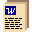

<HTML>

<!-- HTML HEAD INFORMATION -----------------------------------------------  -->
<HEAD>
<TITLE>Linux Gazette Issue #6 (January, 1996)</TITLE>
</HEAD>


<!-- HTML BODY -----------------------------------------------------------  -->
<BODY>

<H1>Linux Gazette Issue #6</H1>

<H2>A Publication of the Linux HomeBoy WebPage Series</H2>
<H4>&quot;The Linux Gazette...<I>making Linux just a little more fun...!</I>&quot;
</H4>

<H5>Copyright (c) 1996 John M. Fisk <I>fiskjm@ctrvax.vanderbilt.edu</I><BR><BR>
The LINUX GAZETTE is now a member of the LINUX DOCUMENTATION PROJECT.<BR>
For information regarding copying and distribution of this material see the
<A HREF="./copying.html">COPYING</A> document.<BR>
Linux Home Boy Pages logo created using <EM>David Koblas'</EM> excellent
program XPAINT 2.1.1 </H5>

<HR>
<!-- ---------------------------------------------------------------------  -->


<!-- TABLE OF CONTENTS ---------------------------------------------------  -->
<H2><A NAME="toc">Table of Contents</A></H2>
<H3>Topics in this issue include:</H3>

<UL>
<LI><A HREF="#mail">Salutations and the MailBag</A> 
<LI><A HREF="#tcltk">An Introduction to Tcl/Tk by Jesper Pedersen</A>  
<LI><A HREF="#new_hack">Still Yet another HACK script by Dean Carpenter</A>  
<LI><A HREF="#caldera">Caldera Network Desktop Review, and a LOT More...,
	by Edward Cameron</A> 
<LI><A HREF="#fvwm_audio">FVWM and Audio by Nic Tjirkalli</A> 
<LI><A HREF="#strace">Using Strace by Jesper Pedersen</A> 
<LI><A HREF="#plip">Connecting Computers via PLIP by James McDuffie</A> 
<LI><A HREF="#cron">Using Cron by Brian Freeze</A> 
<LI><A HREF="#knews">Knews and crontab tips by Bill Powers</A> 
<LI><A HREF="#emacs">Emacs tips by Paul Lussier</A> 
<LI><A HREF="#zless">ZLess followup and tips by Werner Fleck</A> 
<LI><A HREF="#kscreen">Kscreen followup by
	<UL>
	<LI>Mats Andtbacka
	<LI>Matt Welland
	<LI>Jon Klippenstein
	</UL></A> 
<LI><A HREF="#xterm_title">Updating XTerm Titlebar Followups by
	<UL>
	<LI>Haykel Ben Jemia
	<LI>Adam Sjoegren
	<LI>Liang S. Ng
	<LI>Jacob Waltz
	<LI>Jean Liddle
	<LI>David Billington
	<LI>Alan Wild
	</UL></A> 
<LI><A HREF="#sendmail">Yahoo!  Got Sendmail to Queue!!</A> 
<LI><A HREF="#keypad">Using the Keypad as a VT Switcher</A> 
<LI><A HREF="#colophon">Colophon</A> 
</UL>

<P>
<HR>
<!-- ---------------------------------------------------------------------  -->


<!-- NEWS FLASH SECTION --------------------------------------------------  -->
<H3><I>News Flash!</I>
</H3>

<P>

<H3>LG Ready for FTP!!</H3>

	<P>
	Yup, I <I>finally</I> got all of this together! :-)

	<P>
	Thanks to all for their patience.  I'm sorry that this took so
	long to organize.  I've put the entire set of file together in
	a tar-gzip'ed format together with a short README.  These pages
	are intended for free usage for any personal, educational, or
	non-commercial purpose.  If that's you, then enjoy!  Anyone
	wanting to use these for commercial purposes just needs to drop 
	me a note and let me know what you'd like to use them for.  See
	the <B>copying.html</B> document above.

	<P>
	My sincerest thanks to the folks at <B>RedHat Commercial Linux</B>
	and <B>The Linux Journal/SSC</B> who have graciously offered the
	use of their ftp services!  You'll find ftp'able copies of the
	Linux Gazette pages at the following URL's:

	<P>
	<A HREF="ftp://ftp.redhat.com/lg/">ftp.redhat.com/lg/</A>
	<P>
	<A HREF="ftp://ftp.ssc.com/pub/lg/">ftp.ssc.com/pub/lg/</A>


	<P>
	Also, if anyone's interested in <B>mirroring</B> the Linux 
	Gazette pages, there's a very short README included for that.
	Basically, I'd be delighted to have these pages mirrored and
	made as accessible as possible.  All I ask is that you let me
	know that you're doing this, send me the URL for your pages,
	and an email address for the person taking care of them.  I'll
	put together a page of mirror sites so that folks can find a
	site closest to them.  Check the mirror.README for more details.

	<P>
	

<H3>Linux Gazette now available on
	Pacific HiTech's <I>Linux Archive Monthly CD-ROM</I>!</H3>

	<P>
	The Linux Gazette files are now available in their entirety on
	<A HREF="http://www.pht.com/cd-roms/monthly.html">Pacific HiTech's</A>
	monthly &quot;Linux Archive Monthly CD-ROM&quot;.

	<P>
	For those of you who haven't heard of this, it's a monthly CD-ROM
	put out by Pacific HiTech that contains a boatload of the latest
	Linux related programs and files culled from the Internet.  For
	example, the January edition included:

	<UL>
	<LI>Linux kernel images through 1.2.13 and 1.3.42
	<LI>MuPad 1.2.2
	<LI>Xemacs 19.13
	<LI>the APX port (Alpha port)
	<LI>Debian floppy image updates
	<LI>Postgres 95 1.0
	<LI>the latest files from Sunsite
	<LI>a HUGE collection of Tcl/Tk files from the tcl/tk archives
	<LI>and, of course, the Linux Gazette pages :-)
	</UL>

	<P>
	If you're interested in this kind of offering, give PHT a
	call at:

	<P>
	<B>+1-800-765-8369</B><BR>
	or, <B>+1-801-261-1024</B><BR>
	FAX: <B>+1-801-261-0310</B>

	<P>
	So... does this mean that the 'Gazette is going commercial?

	<P>
	Nope.

	<P>
	But, let me quickly add that, as you've all probably noticed, I
	believe that a strong commercial base is beneficial to the Linux
	community.  I heartily support and encourage the efforts of such
	folks as Pacific HiTech, RedHat Commercial Linux, the Linux Journal
	and SSC, and O'Reilly publishers.  These enterprises provide 
	valuable services and offerings at VERY competitive rates, and
	many of them contribute a portion of their profits back into
	the non-commercial Linux development efforts.

	<P>
	Ok, sermon over. :-)

	<P>
	Have a look and enjoy!
	<P>

<HR>
<!-- ---------------------------------------------------------------------  -->


<!-- WELCOME MESSAGE -----------------------------------------------------  -->
<H3>Welcome to Issue #6 of the <B>Linux Gazette !</B></H3>

<P>
Yup, that's right... I've decided for sanity's sake, to do a bit of
renaming here.  As of the beginning of this year, the Linux Gazette will
be put out by issue, rather than by month.  The reason for this is pretty
obvious:  I'm back in school and things look busy this semester.  I honestly
can't commit to putting these pages out on a monthly basis.

<P>
I'm very much indebted to all those who've written and sent material to
be included in the 'Gazette.  It helps a LOT and I want to thank these folks
once again.  However, it still takes a good deal of time to update pages,
edit the material sent, and coordinate all that goes into each issue.  

<P>
So...

<P>
I'll make every effort to get something out each month but I definitely
can't promise that this will happen.  Thanks again for your patience and
understanding!  Also, you'll notice that I've changed the 'Gazette's 
main &quot;Table of Contents&quot; page a bit.  The father of a child with
ADDH (Attention Deficit Disorder / Hyperactivity) wrote and mentioned that
this came across as demeaning to those with this condition.  I had ADDH
as a child and admit that I occasionally tease about this, having struggled
with it myself.  I want to publically apologize to all for this.  I admit
that it was inappropriate and in poor taste.  My fundamental intention with
the Linux Gazette is to provide a means of communicating ideas in a way that
makes using Linux more fun, and NOT to insult or demean anyone.  So, once
again I appreciate your patience and understanding, AND I appreciate your
letting me know when I get out of line...

<P>
Having said that, let me finish by saying that I hope you really enjoy
this month's (oops...!  er, this <I>current issue</I> :-) of the 'Gazette.
A lot of folks have written in and there's a lot of great reading here!
I must admit that I've learned a good deal from all the things that people
have written and I hope that you do too.  At the risk of sounding like a
broken record, let me encourage you to drop the author(s) of these articles
a note and let them know what you think!  As I mentioned before, the 'Gazette
is intended to encourage the free exchange of ideas and so I welcome any
comments, suggestions, improvements, or followups that you feel might
help.

<P>
Thanks for dropping in!

<P>
Enjoy!

<P>
--John

<HR>
<!-- ---------------------------------------------------------------------  -->


<!-- MAILBAG -------------------------------------------------------------  -->
<H2><A NAME="mail">Salutations and the 
MailBag</A></H2>

<P>
Well, howdy! :-)

<P>
Happy 1996!  I had a nice, albeit event-filled, Christmas break and am now
glad to be back in school and starting a new semester.  I wanted, once again,
to say a very heart-felt &quot;thanks!&quot; to everyone that took the time
to write.  I know that y'all are pretty busy and I appreciate the time that
many of you took out of busy schedules to write.

<P>
I've tried to include a number of interesting and informative letters below.
Since my mailbox, at last count, has ballooned to 700+ messages over the past
couple months, I can't squeeze all your messages in here :-)  although I've
tried hard to drop everyone at least a short note of thanks.  

<P>
Let me encourage you to read these things!

<P>
Seriously.

<P>
There are a LOT of quick tips and excellent ideas here.  I haven't set up a
&quot;mailto:&quot; for each person that wrote, but if you find something useful
then by all means drop that person a note and let them know about it.  Most of
all... 

<P>
Enjoy!

<P>
John

<P>
 <B>Kevin Pearson</B><BR>
Date: Sat, 06 Jan 1996 18:54:10 CST<BR>
From: Kevin Pearson &lt;adonis2@localnet.com&gt;<BR>
<B>Subject: African American Pioneer Link</B><BR>

<P>
On Jan. 1st, was the release of the two newest Black 
Educational Video. The name of the program is called: &quot;A 
Salute to Our Black Pioneers&quot; - Profife: Dr. Charles R. Drew, 
Credited with saving thousands of lives daily due to his 
invention of plasma * and * Profile: Frederick M. Jones, 
invented the first refrigeration unit for long haul trucks. 

<P>
We at Adonis are creating our home page at this time. We are 
let everyone one know about our company, which is producing 
Black Educational video programs. We would like to use your 
like address so that others can link up to your services. 
Also we would like our infomation be part of your information 
home page. If you can get back to me and see what we can do. 
Thank you. Kevin Pearson, President  Adonis Productions

<P>
P.S. Our Home Page will be online on Martin Luther Kings Birthday

<P>
<A HREF="http://www.adonis.com">http://www.adonis.com</A>

<PRE>
-- 
поЮ║
</PRE>


<P>
 <B>Jeremy Laidman</B><BR>
Date: Sat, 23 Dec 1995 22:56:45 CST<BR>
From: Jeremy Laidman &lt;JPLaidman@ACSLink.net.au&gt;<BR>
<B>Subject: Another user for setterm</B><BR>

<P>
John

<P>
I hope you find this useful enough to include in the Gazette.

<P>
This is something I use in my Unix profiles to guide my eyes to
previous command lines.  By highlighting the prompt I can quickly
tell where output from a command ends and my keystrokes begin.

<P>
For a bash shell, in my .profile I have:

<PRE>
  export PS1="\[`setterm -foreground green`\]\[`setterm 
                     -bold on`\]\h:\w\\$\[`setterm -default`\] "
</PRE>

<P>
My prompt appears as:

<PRE>
    hostname:/current/dir$
</PRE>

<P>
with the whole prompt a bright green (looks OK on a black screen).
If I'm logged in as root, the $ becomes #.  For more info on
bash-isms, check out the bash man page.  I use variants of this 
technique under other shells and on other versions of UNIX (see 
example below).

<P>
Some explanation for the curious:

<P>
The brackets \[ and \] are required to inform bash of escape
sequences (as generated by setterm.  Otherwise, command-lines that
extend to multiple lines will not wrap quite right after a bit of
editing.

<P>
Note the extra backslash escaping the $.  It won't show as # for root
without it.  I could have enclosed the whole string in single quotes,
and not had to use the extra bashslash, but this delays the execution
of the 'setterm' commands to when the prompt is displayed (can be 
useful) rather than when it is set.

<P>
For systems without setterm, but with terminfo capabilities, use 
tput, replacing `setterm -foreground green` with `tput bold`, and 
`setterm -default` with `tput sgr0`.

<P>
For non-bash shells, the brackets \[ and \] for escape-sequences are
not needed.  For a non-Linux korn-shell (ksh) account I have, I use:

<PRE>
  export PS1="`tput bold``hostname`:\$PWD$`tput sgr0` "
</PRE>

<P>
This does everything except show # for root.

<P>
Congratulations on a fab publication.  Most helpful.  I like the
quick tips idea.  So much that makes more Linux useful for me has
been shown to me by fellow Linuxers who just discovering things
accidentally.  Ideal snippets for such a publication.

<P>
Cheers
<P>
<PRE>
---------------------------------------------------------------------
Jeremy Laidman, Internet/Netware Contractor  JPLaidman@ACSLink.net.au
Canberra, Australian Capital Territory    Phone: (61 6) 241 7969 (ah)
</PRE>


<P>
 <B>Simon Arthur</B><BR>
Date: Sat, 02 Dec 1995 00:07:33 CST<BR>
From: Chroma &lt;chroma@mindspring.com&gt;<BR>
<B>Subject: FvwmWinList modification</B><BR>

<P>
I thought you might be interested in a cool modification I made to
FvwmWinList.

<P>
I made a simple change to FvwmWinList for my own use.  To make it more
like the Windows 95 taskbar, I modified ButtonArray.c

<P>
In function DoButton, I changed the line

<PRE>
XDrawString(dpy,win,graph,x+newx,y+3+ButtonFont->ascent,ptr->title,strlen(ptr->title));

to read  

XDrawString(dpy,win,graph,x+2,y+3+ButtonFont->ascent,ptr->title,strlen(ptr->title));
</PRE>

<P>
This removes the centering.  I find this works much better if you have 
FvwmWinList on the left side of the screen as it lets you see the name of
the window even if FvwmWinList is partially covered.

<P>
Here's what I have in my .fvwmrc:

<PRE>
*FvwmWinListBack #908090
*FvwmWinListFore Black
*FvwmWinListFont -adobe-helvetica-bold-r-*-*-10-*-*-*-*-*-*-*
*FvwmWinListAction Click1 Iconify -1,Focus
*FvwmWinListAction Click2 Iconify
*FvwmWinListAction Click3 Module "FvwmIdent" FvwmIdent
*FvwmWinListUseSkipList
*FvwmWinListGeometry +3-48

Function "InitFunction"
        Module  "I"     FvwmWinList
</PRE>

<PRE>
----------------------------------------------------------------------------
Simon Arthur
chroma@mindspring.com            http://www.mindspring.com/~chroma/home.html
hypemaster@hyper-g.com   http://www.mindspring.com/~chroma/hgc/hgc-home.html
</PRE>


<P>
 <B>Tim Newsome</B><BR>
Date: Fri, 29 Dec 1995 09:38:00 CST<BR>
From: Tim Newsome &lt;drz@cybercomm.net&gt;<BR>
<B>Subject: RE: Linux Gazette</B><BR>

<P>
On Thu, 28 Dec 1995, John M. Fisk wrote:

<PRE>
&gt; &gt;Dunno if the following is in one of the issues I haven't read yet, but here
&gt; &gt;goes. To have a background picture for X put the following at the end of your
&gt; &gt;xinitrc:
&gt; &gt;xv +root -rmode 5 background.gif -quit &
&gt; &gt;I can't remember what the -rmode 5 means. Probably centered in the screen.
&gt; &gt;Neat thing, anyway.

&gt; Thanks for the tip!  I've actually run across this and played with 
&gt; wallpapering the root window using xv -- very cool!  Definitely ought
&gt; to mention this.

</PRE>
As for tips, I wrote this shell-script a while ago:

<PRE>
#!/bin/sh

TMP=/tmp/$$_
MAXLENGTH=1000

for logfile; do
  tail -$MAXLENGTH $logfile > $TMP
  # Don't use mv to keep the permissions the same.
  cat $TMP > $logfile
  rm -f $TMP
done
</PRE>

<P>
It simple goes through all the logfiles you specify on the commandline and
trims them to a 1000 lines. (Nothing really useful, just another 2c one. I
actually like the 2c tips a lot.)

<P>
&gt; and your taking the time to write.  Hope you had a merry Christmas --
&gt; have a Happy New Year!

<P>
Same to you!

<P>
Tim

<PRE>
Tim Newsome. drz@cybercomm.net. http://www.cybercomm.net/~drz/. HotJava
rules. Pretending to work is almost as hard as the real thing. Linux >
Windows. question=(be||!be); answer=42; hack!=crack; IRC=fun; cogite ergo
rideo. 1+1=3 for large values of 1. CMU here I come! NO CARRIER
</PRE>


<P>
 <B>Kurt M. Hockenbury</B><BR>
Date: Fri, 08 Dec 1995 21:55:01 CST<BR>
From: Kurt M. Hockenbury &lt;kmh@linux.stevens-tech.edu&gt;<BR>
<B>Subject: Linux Gazette syslog tip</B><BR>

<P>
In the November issue, you meantion syslog.conf.  Here's a quick tip:
I have a line at the end of my /etc/syslog.conf which reads

<PRE>
# Throw everything on tty8 as well
*.*							/dev/tty8
</PRE>

<P>
This way, I also get a copy of *every* syslog entry on Virtual Console 8
(which I don't otherwise use - no getty running on it, etc).  You can
use any unused console you want.

<P>
It's handier than having to tail the various logging files, and cheaper
on memory than running a "tail -f" under some shell, and uses no extra
disk space.

<P>
When my hard disk makes swapping noises, I can look on VC8 and see the
log of the incoming connection or mail.  When I'm configuring or debugging
daemons, it's easy to check what they're logging.  :)

<P>
Hopefully, other may find this a useful suggestion.

<P>
-Kurt
<PRE>
-- 
                                                                      [Place]
snail://USA/07030/NJ/Hoboken/PO Box 5136/Kurt M. Hockenbury           [Stamp]
                                                                      [Here.]
</PRE>

<P>
 <B>Lee Olds</B><BR>
Date: Fri, 12 Jan 1996 10:40:58 CST<BR>
From: Lee Olds &lt;leeo@slmd.com&gt;<BR>
<B>Subject: Minor nit in oct LG article on TRAP</B><BR>

<P>
Hi.  Linux Gazette looks real good!

<P>
I have a small correction for the act article on TRAP.
You said:

<PRE>
&gt;So, what are the signals that can be trapped? The most common ones,
&gt;I'm told are the following: 
&gt;
&gt;      0 - program exit 
&gt;      1 - hang-up 
&gt;      2 - user interrupt (ctrl-c) 
&gt;      9 - kill signal from another process 
</PRE>

<P>
Those are probably the most commonly sent signals. All except for
signal 9 could be the most commonly trapped signals as well.  But
signal 9 is special and can never be caught, so the shell has no
way to trap it.

<PRE>
-- 
Lee Olds
olds@eskimo.com
</PRE>


<P>
 <B>Brian Matheson</B><BR>
Date: Thu, 21 Dec 1995 22:14:44 CST<BR>
From: Brian Matheson &lt;bmath@sirius.com&gt;<BR>
<B>Subject: Stuff</B><BR>

<P>
Just wanted to drop you a line and say hey again and let you know that 
I've become another of your avid fans!  Since you mentioned that you'd be 
doing a little work on the ole' toy box, I thought I'd point out 
something in SunSite's Toys directory that's just too groovey to be 
overlooked: Xfishtank.

<P>
It turns your root window into a fish tank and runs beautifully in the 
background while I'm doing other stuff on my poor-boy's 486/33 with 8 
megs of RAM, and it doesn't even complain about netscape eating up the 
color palette.

<P>
Another thing that I'd forgotten about but came across while trying to set 
up a ppp connection with our system at work is a little technique 
for trimming down those pesky syslogs.  I don't know about you, but I 
usually forget about them until something doesn't work and then realize 
that they've grown to outrageous proportions in my absent-mindedness.  So 
I came up with a one-liner to grep out the lines for a certain date:

<PRE>
grep "`date | cut -b5-10`" /var/adm/syslog | cut -b8-
</PRE>

<P>
Just make an alias for it and you're all set.  Works great on 
/var/adm/messages too!

<P>
Many thanks for sharing the great work you do with the rest of us, the 
countless hours you spend aren't going unappreciated!

<P>
Happy Hollidays!

<P>
Brian<BR>			
bmath@sirius.com<BR>


<P>
 <B>Liang Ng</B><BR>
Date: Fri, 12 Jan 1996 22:00:14 CST<BR>
From: Liang Ng &lt;L.S.Ng@ecs.soton.ac.uk&gt;<BR>
<B>Subject: Re: Update of xterm title bar. Solution.</B><BR>

<P>
John M. Fisk writes:

<PRE>
&gt; Excellent!  I've saved your message and will _definitely_ include it with
&gt; the next edition of the LG!  Glad to see that you were able to get this
&gt; worked out :-)  Also, thanks SO much for taking the time to write and
&gt; offer this suggestion.  
</PRE>

<P>
Thanks John. I am very pleased to hear that.

<P>
BTW, here is a suggestion about xlock.

<P>
I am not using xdm.  I use startx to start the X Window.  When I used
xlock on the X Window, I found that it was actually possible to switch
to the Virtual Console (VC) from which I started X Window.  i.e.  xlock
is broken! I, in fact anyone, was able to suspend startx by pressing
ctrl-z at the VC, then kill xlock.

<P>
Solution to this: log myself out from the virtual console, before I
leave my desk.

<P>
This solution obviously works. But it is a nuisance to see the closing
down message at the VC when X Window is shut down later. So I created a
Bash function startx() which redirect the stderr to /dev/null:

<PRE>
startx()
{
   /usr/X11/bin/startx $* 2> /dev/null
}
</PRE>

<P>
Note that the full path of the actual startx must be used or else Bash
will interpret it as recursive function. Note also that alias in Bash
does not carry arguments, hence I have to use function instead.

<P>
Of course, if you really want, you could do:

<PRE>
startx()
{
   /usr/X11/bin/startx $* 2> /dev/null &
   clear
   logout
}
</PRE>

<P>
Which logs you out from the VC as soon as X Window is started.

<P>
Cheers

<P>
Liang S Ng


<P>
 <B>Tim Wallace</B><BR>
Date: Sat, 23 Dec 1995 08:43:30 CST<BR>
From: Tim Wallace &lt;root@web.tenn.com&gt;<BR>
<B>Subject: RE: Stuff</B><BR>

<P>
John,

<P>
Here's the crontab that comes with RH2.0 and RH2.1.

<PRE>
SHELL=/bin/bash
PATH=/sbin:/bin:/usr/sbin:/usr/bin
MAILTO=root

# Run any at jobs every minute
* * * * * root /usr/sbin/atrun

# Make the whatis databases
21 03 * * 1 root /usr/sbin/makewhatis /usr/man /usr/X11R6/man

# Make the find.codes database
47 02 * * * root /usr/bin/updatedb --prunepaths='/tmp /proc /mnt /var/tmp 
/dev' 2&gt; /dev/null

# Trim wtmp
45 02 * * * root find /var/log/wtmp -size +32k -exec cp /dev/null {} \;

# Remove /var/tmp files not accessed in 10 days
43 02 * * * root find /var/tmp/* -atime +3 -exec rm -f {} \; 2&gt; /dev/null

# Remove /tmp files not accessed in 10 days
# I commented out this line because I tend to "store" stuff in /tmp
# 41 02 * * * root find /tmp/* -atime +10 -exec rm -f {} \; 2&gt; /dev/null

# Remove formatted man pages not accessed in 10 days
39 02 * * * root find /var/catman/cat?/* -atime +10 -exec rm -f {} \; 2&gt; 
/dev/null

# Remove and TeX fonts not used in 10 days
35 02 * * * root find /var/lib/texmf/* -type f -atime +10 -exec rm -f {} 
\; 2&gt; /dev/null

# Trim log files
34 02 * * * root find /var/log/maillog -size +16k -exec /bin/mail -s "{}" 
root &lt; /var/log/maillog \; -exec cp /dev/null {} \;
33 02 * * * root find /var/log/messages -size +32k -exec /bin/mail -s 
"{}" root &lt; /var/log/messages \; -exec cp /dev/null {} \;
32 02 * * * root find /var/log/secure -size +16k -exec /bin/mail -s "{}" 
root &lt; /var/log/secure \; -exec cp /dev/null {} \;
31 02 * * * root find /var/log/spooler -size +16k -exec /bin/mail -s "{}" 
root &lt; /var/log/spooler \; -exec cp /dev/null {} \;
30 02 * * * root find /var/log/cron -size +16k -exec /bin/mail -s "{}" 
root &lt; /var/log/cron \; -exec cp /dev/null {} \;
</PRE>

<P>
The wordwrapping should be un-done of course.

<P>
Tim


<P>
 <B>Tim Newsome</B><BR>
Date: Wed, 27 Dec 1995 17:53:03 CST<BR>
From: Tim Newsome &lt;drz@cybercomm.net&gt;<BR>
<B>Subject: Linux Gazette</B><BR>

<P>
	Hi,

<P>
You're probably getting millions of these, but I just wanted to say the Linux
Gazette absolutely positively completely rules. Just discovered it and reading
from all of them. You taught me a bunch of stuff about fvwm there. :-)
Dunno if the following is in one of the issues I haven't read yet, but here
goes. To have a background picture for X put the following at the end of your
.xinitrc:

<PRE>
xv +root -rmode 5 background.gif -quit &
</PRE>

<P>
I can't remember what the -rmode 5 means. Probably centered in the screen.
Neat thing, anyway.

<P>
Keep it up!

<P>
Tim

<PRE>
Tim Newsome. drz@cybercomm.net. http://www.cybercomm.net/~drz/. HotJava
rules. Pretending to work is almost as hard as the real thing. Linux >
Windows. question=(be||!be); answer=42; hack!=crack; IRC=fun; cogite ergo
rideo. 1+1=3 for large values of 1. CMU here I come! NO CARRIER
</PRE>


<P>
 <B>Matt Welland</B><BR>
Date: Tue, 12 Dec 1995 15:49:22 CST<BR>
From: Matt Welland &gt;welland@node71.tmp.medtronic.COM&gt;<BR>
<B>Subject: System configuration - beyound RCS</B><BR>

<P>
John,

<P>
I've been using RCS for some time to control my system files but I found I
needed something more. I wanted to be able to check out an entire machine
configuration so I installed cvs. I checked in all the pertinent files in /etc,
/usr/lib/uucp, /usr/lib/news and so forth and gave them a module name. Now I
can check out any of several machine configurations each with its own hostname
and setup. CVS took a little learning but if you know and understand RCS it is
pretty easy. Follow the instructions that come with CVS and keep a system
backup until you are confident everything is rock solid and predictable.

<P>
-Matt

<PRE>
-- 
      ,------------------------------------------------------------.
      | Matt Welland            | Medtronic/Micro-Rel              |
      | Design Engineer         | IC CAE group                     |
      `--------------welland@tmp.medtronic.com---------------------'
</PRE>


<P>
 <B>Ed Petron</B><BR>
Date: Sat, 30 Dec 1995 11:39:04 -0500<BR>
From: Ed Petron &lt;epetron@leba.net&gt;<BR>
<B>Subject: Linux</B><BR>

<P>
John, I've been looking at your Linux home page and it's really great! I've got
a home page devoted to technical and network computing at
<A HREF="http://www.leba.net/~epetron">http://www.leba.net/~epetron</A>. It's 
always great to "meet" another Linux afficianado. Drop me line if you get a 
chance. I'll be looking forward to hearing from you.

<P>
Ed Petron


<P>
 <B>Morpheus</B><BR>
Date: Fri, 15 Dec 1995 23:40:26 CST<BR>
From: Morpheus &lt;morpheus@markwoon.student.Princeton.EDU&gt;<BR>
<B>Subject: RE: Comments and xterm titlebars</B><BR>

<P>
On Fri, 15 Dec 1995, John M. Fisk wrote:

<PRE>
&gt; Hmmm... sounds interesting.  Are these shell scripts or binaries?  I've
&gt; seen the pushd and popd programs mentioned before but have never run
&gt; across them.  Do you recall where you picked these up?
</PRE>

<P>
Whoops.  I just checked, and pushd and popd are shell built-ins.  See how 
much cooler tcsh is?  ;^)  (Just joking, don't want to start a my-shell-is-
better-than-your-shell flamewar here.)

<P>
Another neat tcsh built-in is &quot;where&quot; which searches your path for a 
file name you provide (eg. &quot;where popd&quot; in which case it returns 
&quot;popd&quot; is a shell built-in)

<P>
And on killing proceses, check out killall, it should come with the 
standard distribution.  It'll kill all proceses with the name you provide 
(the slay alias I sent you probably only works on the first, I've never 
tested this).  Very handy with runaway processes that spawn child 
processes faster than rabbits in heat.

<PRE>
&gt; I'm not sure... I've not enough of a guru to know how you'd enter a 
&gt; control or escape character from the keyboard.  I simply used a text
&gt; editor to do this and then messed around with it after creating a 
&gt; small shell program.
</PRE>

<P>
BTW, the emacs sequence for inserting control sequences is Control-q, 
followed by the desired control sequence.  Adding this to the Nov. issue 
of LG will probably help out emacs users, fitting in well with your 
description on how to do so with vi...  ;)

<PRE>
&gt; Have a Merry Christmas and Happy New Year.  
</PRE>

<P>
You too!

<PRE>
~Morpheus~~~~morpheus@vanaheim.princeton.edu~~~~~~~~E Pluribus Linux~~~~~
</PRE>

<P>
<A HREF="#toc"></A>
<A HREF="mailto: fiskjm@ctrvax.vanderbilt.edu"></A>
<A HREF="./gazette_toc.html"></A>
<A HREF="./linux/linux.html"></A>
<BR><BR>
<HR>
<!-- ---------------------------------------------------------------------  -->


<!-- TCL/TK    -----------------------------------------------------------  -->
<H2><A NAME="tcltk">Introduction to Tcl/Tk
by Jesper Pedersen</A></H2>

<H2>Tcl/Tk -- what is it</H2>

<P>
By <B>Jesper Pedersen</B> &lt;blackie@imada.ou.dk&gt;

<P>
In this article I'll try to describe what Tcl/Tk is, its
strong points, and its draw backs. Furthermore, I'll give
some examples of using tcl/tk and provide references to
materials about Tcl/Tk. Finally, I'll try to help you avoid
a few of the common pitfalls with using Tcl/Tk.<P>

<H3>Tcl</H3>
Tcl is an interpreter language which is very simple to learn
and use. At the very beginning, John K. Ousterhout (the author
of the program) didn't meant it to be a programming language in
itself, but rather a glue for creating interfaces. The idea
was that one should write his/her program in C and then use
tcl as an interface to the code.<P>

Despite this initial intention, Tcl has come to be 
used heavily as a programming language in itself, and it has
turned out to be a very good language for quick and dirty 
programming. It's much more difficult to use it as a language
for larger programs. (This requires much more dicipline and
structure)

<H3>Tk</H3>
Tcl is a very simple programming language, and would never have
been used for anything else, other than an interface glue language, if it
weren't for its brother TK.
Tk is a library of Tcl functions which create and manipulate
X11 widgets like <I>entries</I>, <I>listboxes</I>, <I>buttons</I>,
and many many other objects. Tk provides very high level X11 programming, 
<I>i.e.,</I> it requires about 10-30 times fewer lines to create a
graphical interface in Tk than in pure X11 programming.<P>


<H2>Getting started</H2>
To start using Tk, you have to know just a little bit about
Tcl. Though this section is quiet boring, it'll be of great
value for you when using Tk in itself. (please note that Tk is
<I>only</I> a library package to the Tcl language.)
To start Tcl type <B>tclsh</B>. This will start the
interpreter for Tcl.

<H3>Variables and Evaluation strategy</H3>
The very core of a language is variables. In tcl you set
variables with the command <B>set</B>, and read the content
of a variable, either with <B>set</B> or prepend the name 
with a dollar sign. Here is an example:<BR>
<CODE>set var 10</CODE>, this will set <B>var</B> to the value
<B>10</B><BR>
<CODE>set var</CODE>, this will read the content of var, ie.
return the value 10.<BR>
<CODE>$var</CODE>, this will expand to the value of
<B>var</B><P>

To try this, use the command <B>puts</B>, which will write it's
argument to standard out (stdout), try this:

<PRE>
set var 10
puts [set var]
puts $var
</PRE>

This will write 10 twice to standard out.
Well what were those brackets for? In Tcl, commands inside brackets
are expanded, so the evaluation strategy for the command
<CODE>puts [set var]</CODE>, is as follows:
<OL>
  <LI> Evaluate <CODE>set var</CODE> which evaluates to         
       <B>10</B>
  <LI> Evaluate <CODE>puts 10</CODE>, which write 10 to standard 
       out.
</OL>


<H3>braces or quotes</H3>
That was the first part of Tcl, the second part is the
differentiation between curly brackets and quotion marks
(<B>{}</B> and <B>""</B>)<BR>
Lets see an example:
<PRE>
set var 10
puts "var is $var"
puts {the name of the variable is $var}
</PRE>
Executing the second line prints <B>var is 10</B>, while the
third line prints <B>the name of the variable is $var</B>. Here is how
it works: if the outermost delimiter is a brace,
then everything inside is seen literally, whereas if the outermost
delimiter is a quotion mark, then every thing inside is expanded.

<PRE>
puts {every thing "is [$litterals]"}
puts "here \[things\] shall be \"escaped\" !\$"
</PRE>

This will print <CODE>every thing "is [$litterals]"</CODE> and
<CODE>here [things] shall be "escaped" !$</CODE><P>

Different commands require different numbers of parameters, while
braces and quotes are used to group things which are meant as
one parameter! I.e if you want to set
<B>var</B> to "hello world", write <CODE>set var "hello
world"</CODE> or <CODE>set var {hello world}</CODE>. In this
example there is no difference between using braces or quotes.
However, if you want to set var to the content of var1 plus a
string you would write <CODE>set var "var1 is $var1"</CODE>. If
you had written <CODE>set var {var1 is $var1}</CODE>
<B>var1</B> wouldn't have been expanded, since it is protected
by the braces.<P>


<H3>References to Tcl</H3>
The online manual pages are the most important references in
Tcl/Tk as they contain all the information you need, and it might
be a very good idea to <A HREF="#installation">print them
out</A>. There are also a lot of places where the manual pages
have been converted to HTML. Here are a few references:
<UL>
  <LI> To learn more about braces, quotes, evaluation strategies,
       etc, see the manual pages:
<A HREF="http://www.sco.com/Technology/tcl/man2/tcl_man/Tcl.n.html">man Tcl, </A>
  <LI> John K. Ousterhouts <A HREF="http://www.cica.indiana.edu/cica/faq/tcl/tcl.html">draft to his book</A> 
       about Tcl/Tk. Please note that this book is about Tcl    
       version 7.3 and Tk 3.6 See the note about 
       <A HREF="#versions">Tcl/Tk versions</A> 
  <LI> Brent Welch's <A HREF="http://www.smli.com/~bwelch/book/index.html">Practical
       Programming in Tcl and Tk</A>
  <LI> Other online Tcl/Tk manual pages can be found at the following sites:<BR>

     <A HREF="http://www.sco.com/Technology/tcl/Tcl.html#ManPages">www.sco.com</A></BR>
     <A HREF="http://www.elf.org/tcltk-man-html/contents.html">www.elf.org</A></BR>
     <A HREF="http://www.imada.ou.dk/Technical/Manpages/tcl/index.html">www.imada.ou.dk</A></BR>

</UL>


<H2>Getting started with Tk</H2>
Now it's time to see what Tk is all about (That's why you read
this article right?!) As I mentioned earlier, Tk is <I>just</I>
Tcl functions used to manipulate X11 widgets. Well were do I
start...

<H3>Hello world</H3>
Yes! All introductions to new programming languages offer a
Hello World example, so here it comes. Please start the Tcl
interpreter with support for Tk. This one is called <B>wish</B> or
<B>wish4.0</B>

<PRE>
label .label -text "Hello World"
button .button -text "Quit" -command exit
pack .label .button
</PRE>

Try it!

<P>
Well what happens? Three Tk functions are called: <B>label</B>,
<B>button</B> and <B>pack</B>. The first one creates a label
with the text "Hello World". The next one create a button,
gives it the title "Quit", and associates it with the Tcl
command  "exit". The third line maps them in a window, so
you can see them on the screen.

<P>
Ok let's try to understand what this is all about. To do that,
please invoke the manual page for the
<A HREF="http://www.sco.com/Technology/tcl/man2/tk_man/label.n.html">label</A> 
command. In this you can see that the label command has
several options available. The idea is that you can configure
the label in several ways. All the options have a default value
You can, for example,  configure the
color of the text, the font, the text itself (as we did in the
example), and so forth. Some of the options are specific for the
label command, while others are general for several
different Tk functions. The specific ones are listed and
described in the manual page for the label command, while the
more general ones are listed and described in the manual page called
<A HREF="http://www.sco.com/Technology/tcl/man2/tk_man/options.n.html">options</A>.

<P>
The last thing to understand about the label command is its
first argument, which is <I>.label</I> in our example above.
This argument is the name of the label. The name is used, when
you want to place the label on the screen, or later on when you
want to configure some of its properties (eg. change the text of
the label).

<P>
To fully understand this, we have to learn about the packing
strategy of Tk.

<H3>The Packer</H3>
The last command which was invoked in the example above was
<B>pack</B>, if you try to run the example without this
command, you will see that nothing appears on the screen. The
idea is that you still need to describe how things are packed on the screen. 

<P>
To see what you can do with this command, see the manual page for
<A HREF="http://www.sco.com/Technology/tcl/man2/tk_man/pack.n.html">pack</A>.
Here are a few examples which will give you an idea of what can be done. 
Exchange the pack
line above with each of these lines, and rerun the example:
<UL>
  <LI><CODE>pack .label .button -side left</CODE>
  <LI><CODE>pack .label .button -pady 20</CODE>
  <LI><CODE>pack .label -pady 100 -padx 100 -anchor c</CODE><BR>
       <CODE>pack .button -anchor e</CODE>
</UL>

<H3>Interaction with the user</H3>
So far the only interaction with the user has been a button
which he could press to exit the program. Often, programs need a
bit more interaction, so let's see how entries and check buttons
work. Here is a bit code which will create a check button and
an entry on the screen:

<PRE>
### creating two frames for the different part of the text
frame .top
frame .middle
frame .bottom
pack .top .middle .bottom

### creating the entry with a label
label .top.label -text "Please type your name:"
entry .top.entry -textvariable name
pack .top.label .top.entry -side left -padx 5

### creating the check button
checkbutton .middle.but -text "I'm good at tcl!" \
   -variable good
pack .middle.but

### creating the OK and CANCEL button
button .bottom.ok -text OK -command okCmd
button .bottom.cancel -text Cancel -command exit
pack .bottom.ok .bottom.cancel -side left

### creating the command to call when the OK 
### button is pressed
proc okCmd {} {
  global name good
  puts "Hi $name"
  if {$good} {
    puts "You are good at tcl...great"
  } else {
    puts "You should really learn Tcl, before you play with TK"
  }
}
</PRE>

<P>
In Tk, variables for entries, check buttons, radio buttons and
other widgets which require user interaction, are saved in
global variables. So when I create an entry with <I>-
textvariable name</I> then the contents of this entry is reflected
in the global variable <I>name</I>.

<P>
In the example above, I create a procedure which is called when
the <I>OK</I> button is pressed. The procedure definition is, in
fact, very simple and very much like in C. See the manual page for
<A HREF="http://www.sco.com/Technology/tcl/man2/tcl_man/proc.n.html">proc</A> 
for a full description on how it works.

<P>
In this procedure I declare the variables <I>name</I> and
<I>good</I> for global variables with the global command.
(Again, if you want to know more see the manual page!)
In the example above you can see an example of a widget which
is packed inside another. There is nothing fancy about it. The
<I>frame</I> widget is just a container which help you pack the
things in a smart way on your screen. When I have created the
frame <I>.top</I> I can pack things inside it, and I have to
name its sub widget with the .top name prefixed.

<P>
The rest of the example should be clear, but if there is
something you don't understand, please see the manual page, all
the information is located in them!

<H2>Programming Tcl/TK</H2>
In this section I'll give you some hints about how you can create
Tcl/Tk programs.

<P>
First of all, don't start creating large applications in Tcl
right away. There are several reasons for this, but the the
most important one is that Tcl is a <B>very</B> bad language
for incremental programming, when you want structure too...
The best advice I can give you is to try tcl/tk out, see other
applications and read about Tcl and Tk's possibility. When
you've done all these things you'll understand what it can do, and then you
start to <B>design</B> your applications before you program.
The worst thing you can do in Tcl is to program a basic version
of your interface, and then start to patch it until it is what
you really want! I know that...I've tried it myself :-(

<P>
When you have a better understanding of Tcl, you'll find that it lacks
composed types: the only types you have in Tcl are strings, list of
strings, and associative arrays (also known as maps in other languages).
The associative arrays <I>can not</I> contain arrays them self!
This is a significant problem if you use Tcl as a programming language for
larger programs. One solution for this problem is to create <I>virtual
modules</I>. The idea is that you name your variables with a module
prefix. If you,for example, have some part of your program which takes care of
help, you may see this as a module, and variables used by this part of
the program are all name something like help`<I>variable</I>. This
strategy makes it a bit harder to expand variables since the pling
character is a word separator in variables. This means that if you
write $a`b, Tcl will try to expand a variable called $a. So, to expand
this variable you would write ${a`b} or [set a`b].


<H2><A NAME="installation">Installing Tcl/Tk</A></H2>
It is very simple to install Tcl/Tk. Since you may also desire to
expand your Tcl/Tk installation with additional tools like TclX,
[Incr&nbsp;Tcl] or Tix, here is a short description of how you would do it.
<UL>
  <LI> Get Tcl and Tk from <A HREF="ftp://ftp.smli.com/pub/tcl/">ftp://ftp.smli.com/pub/tcl/</A>
  <LI> unpack it with tar xvzf <I>file name</I>
  <LI> cd to the Tcl directory
  <LI> type ./configure, and add --prefix=<I>directory</I> if you want
       place it in another directory than /usr/local/{bin,lib,man}
  <LI> type make, to compile Tcl
  <LI> type make install -k, to see that <I>make install</I> does the
       right thing (You should always do that!)
  <LI> type make install, to install Tcl on you system.
  <LI> cd to the tk directory, ./configure, make, make install -k and
       finally make install
  <LI> if you install in /usr/local instead of /usr, you should put
       /usr/local/bin in front of /usr/bin, to ensure that it is your
       newly installed version of Tcl/Tk, which is called, and not the
       one which comes with your standard Linux installation.
  <LI> Now it's a good time to print out the manual pages for Tk (You
       don't need the ones for Tcl as much), do this by cd'ing to the
       doc directory, which is a sub directory of Tk. In this directory
       you'll find the source for the manual pages.
	
	<P>
	You can view these using the command:

	<PRE>
	man ./<I>filename.n</I>
	</PRE>

	<P>
	or, you can convert these to plain ASCII text files which can
	be viewed or printed using a BASH shell script such as:

	<PRE>
#!/bin/sh
#
for SUFFIX in 1 3 n
do
	find -name "*.$SUFFIX" -print |
	while read FILE
	do
		echo -n "converting $FILE to ${FILE%%.$SUFFIX}.txt ..."
		groff -Tascii -mandoc $FILE 2>/dev/null | col -b > ${FILE%%.$SUFFIX}.txt 
		echo "done."
	done
done
echo 
echo "Finished converting files."
echo
</PRE>

<P>
If you wish to convert these to PostScript format for printing, you can use 
a similar BASH script:

<PRE>
#!/bin/sh
#
for SUFFIX in 1 3 n
do
	find -name "*.$SUFFIX" -print |
	while read FILE
	do
		echo -n "converting $FILE to ${FILE%%.$SUFFIX}.ps ..."
		groff -Tps -mandoc $FILE > ${FILE%%.$SUFFIX}.ps 2>/dev/null
		echo "done."
	done
done
echo 
echo "Finished converting files."
echo
</PRE>
</UL>


<H2><A NAME="versions">Tcl/Tk versions</A></H2>
There are a number of different Tcl/Tk versions, so to help avoid
confusion, here is a list of the differences:
<DL>
  <DT> Tcl 7.0 / Tk 3.0
  <DD> This version should be considered outdated. If you find applications
       which require this version (and not Tcl 7.3 / Tk 3.6) you
       should look for other programs which do the same job (I
       believe they exist!)
  <DT> Tcl 7.3 / Tk 3.6
  <DD> This was the first version with really great success (I
       believe...) Many applications still use this one, since the
       next version was released only about a year ago. Many
       differences exist between this release and the official Tcl 7.4 /
       Tk 4.0 release, so applications written for this release may not
       work with version 7.4 / Tk 4.0 
  <DT > Tcl 7.4 / Tk 4.0
  <DD> This is the newest official release from the author of the
       program and is the one that most people are currently using.
  <DT> Tcl7.5a2 / Tk4.1a2
  <DD> This is an <I>alpha</I> release of the next version of Tcl,
       with support of dynamic loading, and Windows (The operating
       system we all love to hate). You should only
       use this if you really want dynamic loading or need Tcl for
       Windows, since no new features has been added so far (as far
       as I know).
</DL>

<H2>Other resources</H2>
Here is a list of resources you should check out if you plan to use
Tcl:

<P>
Well first of all, the USENET group for Tcl/Tk is <B>comp.lang.tcl</B>. The
traffic is heavy, but don't fear: it's worth it..!<P>

<H3>Extensions</H3>
A few extensions are worth mentioning here.

<H4>Tix</H4>
Tix is a set of Mega widgets for Tk. If you plan to use Tk you should
really check out Tix. Personally, I've been using Tk for about 2 years,
and when I learned about Tix I smashed my head against a wall....Tix
was just the extension I needed (WE ALL DO!!!!).
A mailing list exists for Tix, to subscribe, please send mail to the
author Ioi Lam (<A HREF="mailto: ioi@CS.Cornell.EDU">ioi@CS.Cornell.EDU</A>). 
Also, be sure to check out the
<A HREF="http://www.cis.upenn.edu/~ioi/tix/tix.html">Tix home page</A> for
additional information.

<H4>[Incr Tcl]</H4>
[Incr Tcl] is an object orient extension for Tcl.  I have never tried it, 
but from various USENET postings regarding Itcl, it appears that this is 
one of the best object oriented extensions available for Tcl.

<H4>TclX</H4>
TclX is a package which provides a lot of functions for Tcl which are useful
for System Administrators. This is the packages which makes it possible to 
use Tcl instead of Perl.

<H3>WWW places</H3>
<DL>
  <DT><A HREF="http://web.cs.ualberta.ca/~wade/Auto/Tcl.html">Tcl/Tk
	Resources</A>
  <DD> This is a collection of resources for Tcl/Tk.
  <DT> <A HREF="http://www.sunlabs.com:80/research/tcl/">Tcl/Tk Project 
  	At Sun Microsystems Laboratories</A>
  <DD> This is the official Tcl/Tk page
  <DT> <A HREF="http://www.cis.ohio-state.edu/hypertext/faq/usenet/tcl-faq/top.html">
  	The Tcl/Tk Faq</A>
  <DD> Check this one out before you ask on the news!!
  <DT> <A HREF="http://www.sco.com/Technology/tcl/Tcl.html">Tcl WWW Info</A>
  <DD> A lot of references for Tcl/TK
  <DT> <A HREF="http://www.imada.ou.dk/~blackie/dotfile/">The Dotfile Generator</A>
  <DD> This is a configuration tool for emacs/tcsh/fvwm written in
       Tcl/Tk by ME  (I just had to make a short advertise ;-)
</DL>

<P>

[I want to publically thank Jesper for his very gracious offer to write this
article which was no small feat.  Please do not hesitate to drop him a note
and send your comments, suggestions, and most of all a very hearty thanks. 
Also, if you're interested in joining the <B>Dotfile Generator</B> development
team, let Jesper know -- he'll be glad to let you know how you can join this
effort!  Drop him a note at:

<P>
Jesper Pedersen 
<A HREF="mailto: blackie@imada.ou.dk">&lt;blackie@imada.ou.dk&gt;</A>

<P>
Thanks! --John]

<P>
<A HREF="#toc"></A>
<A HREF="mailto: fiskjm@ctrvax.vanderbilt.edu"></A>
<A HREF="./gazette_toc.html"></A>
<A HREF="./linux/linux.html"></A>
<BR><BR>
<HR>
<!-- ---------------------------------------------------------------------  -->


<!-- HACK SCRIPT  --------------------------------------------------------  -->
<H2><A NAME="new_hack">Still Yet another 
HACK script</A></H2>

<P>
While doing a bit of Christmas Break reading over December I ran across a
quote that is attributed to Larry Wall, author of the PERL scripting language.
He's purported to have said something to the effect:

<BLOCKQUOTE>
<P>
&quot;There's <I>always</I> another way to do things...&quot;
</BLOCKQUOTE>

<P>
Whether apocryphal or not, there's a good deal of truth to this little 
saw and the contributions to an improved HACK script are ample evidence of
this.  For those of you tuning in late... a couple months ago I made a 
suggestion that, when modifying all those tricky little configuration files
you've got lying around your system, you should use a shell script that
would ensure that there's a backup copy of the config file made <I>before</I>
you get your grubby little mitts all over it (and whose mom wouldn't agree
with this... :-).  

<P>
The shell script that I offered was the merest skeleton of a suggestion and
pretty minimalistic.  The November edition of the LG had a couple very 
significant improvedments to this.  Here's a self-avowed &quot;<B>Yet another
HACK script</B>&quot; that offers another robust improvement.  It's authored
by <B>Dean Carpenter</B> who graciously gave permission for this to be printed.

<P>
Please drop him a note of thanks!  You should also read his opening comments
in this file -- RTFM :-)

<P>
enjoy!

<P>
From: Dean Carpenter &lt;deano@areyes.com&gt;<BR>
Subject: Re: Yet another HACK script

<P>
Here's hack with the owner/group changes in it.<BR>
Now it will maintain correct user and groups perms.

<PRE>
#!/bin/bash
#
#	hack file|dir
#
#	Edit a file, keeping an original copy in $DIST and a linked
#	copy in $CONFIG.  Uses RCS to log all changes.
#
#	If hacking a dir, simply make a symlink to the dir in $TREE
#	in the proper full-path dir.
#
#	Creates the following files :
#
#		A copy of the original file in /configs/original
#		A symlink to the original file in /configs/links
#		An RCS control file in /configs/RCS
#		A full-path symlink to the original file in /configs/tree
#
#	The full-path is to keep the directory structure available for
#	backing up with tar -h to dump actual files, not just
#	the symlinks.
#
#	That is, backing up with the command 
#
#		(cd /configs/tree ; tar -cvhf configs.tar . )
#
#	will create a tar file with all hack'd files in their correct
#	original locations with relative paths.
#
#		Dean Carpenter
#		deano@areyes.com


# Location of directories
#	CONFIG	Storage dir for links
#	DIST	Original files go here
#	RCS	RCS control files go here
#	TREE	Full path copies of files
#
CONFIG='/configs/links'
DIST='/configs/original'
RCS='/configs/RCS'
TREE='/configs/tree'

# Default to not being a directory
DIR='no'
EDITOR='vi'

CURR_DIR=`pwd`

#
#	Make sure only root can hack
#
if [ "$LOGNAME" != "root" ]
then
	echo "hack: user not logged in as root"
	exit 1
fi

#
#	Need a filename to hack
#
if [ "$1" = "" ]
then
	echo "hack: filename missing"
	exit 2
fi

#
#	If it's a directory we need to link to $TREE
#
if [ -d $1 ]
then
	echo "hack: " $1 " is a directory"
	DIR='yes'
fi

#
#	Must be an existing file or a directory
#
if [ ! -f $1 ] && [ ! -d $1 ]
then
	echo "hack: bad filename"
	exit 3
fi

#
#	Must be a real file, not a symlink
#
if [ -L $1 ]
then
	echo "hack: Must be a real file, not a symlink"
	exit 4
fi

#
#	Make sure the repository exists
#
if [ ! -d $CONFIG ]
then
	echo "hack: Creating " $CONFIG
	mkdir --parents $CONFIG
	chmod 711 $CONFIG
fi

#
#	And the dir to hold the original files
#
if [ ! -d $DIST ]
then
	echo "hack: Creating " $DIST
	mkdir --parents $DIST
	chmod 711 $DIST
fi

#
#	And a place for the RCS files
#
if [ ! -d $RCS ]
then
	echo "hack: Creating " $RCS
	mkdir --parents $RCS
	chmod 711 $RCS
fi

#
#	And finally a place for the full pathname files
#
if [ ! -d $TREE ]
then
	echo "hack: Creating " $TREE
	mkdir --parents $TREE
	chmod 711 $TREE
fi

#
#	Get the name and dir of the file
#
BASENAME=`basename $1`
DIRNAME=`dirname $1`

#
#	If the DIRNAME is just here, then we want the full path
#
if [ "$DIRNAME" = "." ]
then
	DIRNAME=$CURR_DIR
fi

#
#	If it's only a partial dir in the path to the file, we need
#	to get the full path to the file.
#
if [ "$DIRNAME" != "$CURR_DIR" ]
then
	if [ -f "$CURR_DIR"/"$DIRNAME"/"$BASENAME" ]
	then
		DIRNAME=$CURR_DIR/$DIRNAME
	fi
fi

#
#	If we're off the root, we don't want a doubled up //
#
if [ "$DIRNAME" = "/" ]
then
	FILE=$DIRNAME$BASENAME
else
	FILE=$DIRNAME/$BASENAME
fi

#
#	Get the original owner and group of the file to hack
#
OWNER=`ls -l $1 | awk ' { print $3 } ' `
GROUP=`ls -l $1 | awk ' { print $4 } ' `

#
#	If it's a dir, make a link in $TREE then exit
#
if [ "$DIR" = "yes" ]
then
	if [ ! -L $TREE$FILE ]
	then
		mkdir --parents $TREE/$DIRNAME
		ln -s "$FILE" "$TREE$FILE"
		echo "hack: Linking " $FILE "to" $TREE$FILE
		chown $OWNER.$GROUP $TREE$FILE
	else
		echo "hack: " $TREE$FILE " already exists"
	fi
	exit 0
fi

#
#	Copy the original to save it before hacking it.
#	Make sure it's owned/grouped as the original is.
#
if [ ! -f $DIST/$BASENAME.dist ]
then
	cp $1 $DIST/$BASENAME.dist
	echo "hack: creating file " $DIST/$BASENAME".dist"
	chown $OWNER.$GROUP $DIST/$BASENAME.dist
elif [ -f $DIST/$BASENAME.dist ]
then
	echo "hack: " $DIST/$BASENAME".dist already exists"
else
	echo "hack: fatal error in " $DIST/$BASENAME".dist"
	exit 5
fi

#
#	Create the symlink and update owner/group.
#
if [ -f $FILE ]
then
	if [ ! -L $CONFIG/$BASENAME ]
	then
		ln -s "$FILE" "$CONFIG/$BASENAME"
		echo "hack: linking " $FILE "to " $CONFIG/$BASENAME
		chown $OWNER.$GROUP $CONFIG/$BASENAME
	fi
	if [ ! -L $TREE$FILE ]
	then
		mkdir --parents $TREE/$DIRNAME
		ln -s "$FILE" "$TREE$FILE"
		echo "hack: linking " $FILE " to " $TREE$FILE
		chown $OWNER.$GROUP $TREE$FILE
	fi
else
	echo "hack: Whoa, something happened to " $1
	exit 6
fi

#
#	If it's never been RCS'd before, check the file in and
#	create a logging line for it.
#
if [ ! -f $RCS/$BASENAME",v" ]
then
	ci -u $1 $RCS/$BASENAME,v
fi

#
#	Check the file out and lock it
#
co -l $1 $RCS/$BASENAME,v

#
#	Make the changes
#
$EDITOR $CONFIG/$BASENAME

#
#	Check the file back in and re-own/group it
#
ci -u $1 $RCS/$BASENAME,v
chown $OWNER.$GROUP $FILE

#############################################################


-- 
Dean Carpenter		deano@areyes.com
Areyes, Inc.		dcarpenter@kraft.com

</PRE>

<P>
You can drop Dean at note at 
<A HREF="mailto: deano@areyes.com">deano@areyes.com</A>

<P>
<A HREF="#toc"></A>
<A HREF="mailto: fiskjm@ctrvax.vanderbilt.edu"></A>
<A HREF="./gazette_toc.html"></A>
<A HREF="./linux/linux.html"></A>
<BR><BR>
<HR>
<!-- ---------------------------------------------------------------------  -->


<!-- CALDERA REVIEW ------------------------------------------------------  -->
<H2><A NAME="caldera"> Caldera Network 
Desktop Review</A></H2>

<P>
By <B>Edward Cameron</B>

<P>
<H3><A HREF="./caldera_jan96.html">Caldera Network Desktop Review</A></H3>
<H3><A HREF="./websurf_jan96.html">Web Surfing News</A></H3>
<H3><A HREF="./mail_jan96.html">E-Mail and Linux</A></H3>

<P>
[A number of folks have written and asked about reviews of the various Linux
distributions -- Slackware, RedHat, Debian, Yggdrasil, Linux-FT, and so forth.
Since I honestly don't have the diskspace, time, or technical expertise to do
this justice I wanted to thank Edward Cameron for graciously offering to review
one of these fine products:  the Caldera Network Desktop by the Caldera Corporation.

<P>
[Ed very kindly sent a complete set of HTML documents which can be found in their
entirety at the links above.  The <B>CND Review</B> comes complete with some very nice 
screen dumps of the various parts of the desktop which will give you a bit of a 
feel for the product.  The <B>Web Surfing</B> page provides some interesting links
to Netscape plug-ins, and <B>E-Mail and Linux</B> gives some useful suggestions for
setting up <B>popclient</B> and <B>PINE</B> for email service under Linux.

<P>
[If you have comments, suggestions, ideas, or just want to chat about this
program, please don't hesitate to drop Ed a note!  He can be reached at:

<P>
Edward Cameron <A HREF="mailto: ecame119@ecity.net">&lt;ecame119@ecity.net&gt;</A>

<P>
[If anyone else has experiences they'd like to share with setting up or using any
of the various Linux distributions please drop me a note and let me know.  The
only proviso is that serious OS-bashing will be considered a no-no.  (all verbal
scuffles will be directed to the comp.os.linux.advocacy group... :-)

<P>
[Enjoy! --John]

<P>
<A HREF="#toc"></A>
<A HREF="mailto: fiskjm@ctrvax.vanderbilt.edu"></A>
<A HREF="./gazette_toc.html"></A>
<A HREF="./linux/linux.html"></A>
<BR><BR>
<HR>
<!-- ---------------------------------------------------------------------  -->


<!-- FVWM AUDIO ----------------------------------------------------------  -->
<H2><A NAME="fvwm_audio">FVWM and Audio!</A>
</H2>

<P>
By <B>Nic Tjirkalli</B> <A HREF="mailto: nic@pipex-sa.net">&lt;nic@pipex-sa.net&gt;
</A>

<CENTER>
<H3>
FVWM and Sound Effects
</H3>
</CENTER>
The current trend for GUI based operating systems appears to be multimedia -
incorporating the use of cute little sounds when a program starts or
a window is maximised or
minimised.
<BR><P>
Well, there is no reason why dozing or apparently warping OSs should 
have the monopoly on this - the same can be done with the  FVWM
in X.
As of verision 1.24 (release r) of the FVWM, an <B>FvwmAudio</B> module
has been included, as a standard module.
Quoting the FvwmAudio (1.0) man, the FvwmAudio module :-

<CENTER>
<H4>
"communicates  with the FVWM window
manager to bind audio sounds to  window  manager  actions.
Different  audio queues may be assigned to any window 
manager action. FvwmAudio can be used  with  any  independent
audio  player,  and  therefore  requires  no special audio
library APIs of its own. Simple in its design,  it  merely
binds  the audio filenames to particular actions and forks
off the audio player program with the appropriate filename
when that action occurs."
</H4>
</CENTER>

To incorporate sound effects with the Fvwm, you will need :-

<OL>
<LI>A sound enabled/capable Linux System
<LI>Version 1.24r, or higher, of the Fvwm
<LI>An audio player utility
<LI>Instructing FVWM to play the sounds of your choice
</OL>

<BR><P>

<HR SIZE=2 WIDTH=85% ALIGN=CENTER>

<H3>
1. A sound enabled/capable Linux System
</H3>
This is way out of the scope of this discussion, but there is a wealth
of info out there on the net pertaining to sound and linux

<BR><P>


<HR SIZE=2 WIDTH=85% ALIGN=CENTER>

<H3>
2. Version 1.24r, or higher, of the Fvwm
</H3>
You will need to get and compile version 1.24r (or higher) of the Fvwm,
unless you already have FVWM 1.24r or higher. I have not been
able to found out how to get the version number of FVWM.
I have compiled and tested the sound module with version 
<B>2.0.39</B> of FVWM.  You can download the fvwm source from
<B>Sunsite</B> or your favourite Linux mirror.

<P>
[To find out which version of fvwm you're using you can enter the following
either in an xterm or at the console -- note that what is printed to the
screen is actually an error message that happens to contain the Fvwm  version
number.

<PRE>
	fvwm --version
</PRE>

<P>
What you'll see might be something like:

<PRE>
	Fvwm Ver 1.23b

	usage: fvwm [-d dpy] [-debug] [-f config_file] [-s]
	fvwm: another WM is running
</PRE>

--John]

<P>
<B>Compile</B> - have no fear, Fvwm compiles <B>VERY EASILY</B> and
the included documentation is complete and useful. 

<BR><P>
To compile Fvwm,
<OL>
<LI>Pull down the Fvwm source.
The file you need is :-
<A HREF="ftp://sunsite.unc.edu/pub/Linux/X11/window-managers/fvwm-2.0.39.tgz">
ftp://sunsite.unc.edu/pub/Linux/X11/window-managers/fvwm-2.0.39.tgz</A>.
<LI>Place the Fvwm archive file where you normally place source code  - I use
<I>/usr/src</I>.
<LI>Uncompress and untar the archive as follows :-
<BR>
<PRE>
	tar -zxvf fvwm-2.0.39.tgz
</PRE>
<LI>Compile as follows: (also, read the included <I>README.install</I> file)
<BR><P>
<OL>
<LI TYPE = I>Change into the newly created (the tar -zxvf process made it) fvwm
directory, as follows :-
<BR>
<PRE>
	cd fvwm
</PRE>
<LI>Run xmkmf as follows :-

<BR>
<PRE>
	xmkmf 
</PRE>
<LI>Make the makefiles and compile the actual code, as follows :-

<BR>
<PRE>
	make Makefiles
	make all 
</PRE>
<LI>If the make went well, install the new Fvwm and the documentation, 
as follows <B> (note, you will probably need root privileges to do the actual
installation) </B>
:-

<BR>
<PRE>
	make install
	make install.man 
</PRE>
</OL>
</OL>


<HR SIZE=2 WIDTH=85% ALIGN=CENTER>

<H3>
3. An audio player utility
</H3>
The FvwmAudio module requires an external audio player to play sound files.
<BR><P>
<B>NOTE:- </B>
<DL><DT>Extract from fvwm-2.0.39/modules/FvwmAudio/README
<BR><P>
<I>
<DD>
This version of FvwmAudio has builtin rplay support which does not need to
invoke an external audio player to play sounds.  The rplay support is
enabled when FvwmAudio is compiled with HAVE_RPLAY defined (see the Imakefile)
and when FvwmAudioPlayCmd is set to builtin-rplay.  Rplay can be obtained
via anonymous ftp at ftp.sdsu.edu in the /pub/rplay directory and at
ftp.x.org in the /contrib/audio/rplay directory.
</DL>
</I>
<BR><P>
However, I have opted to use an external audio player (SOX) for a whole host
of reasons. Pull down LSOX (the linux version of SOX) from <B>Sunsite</B> 
or your favourite mirror.
The file you need is :-
<A HREF="ftp://sunsite.unc.edu/pub/Linux/apps/sound/convert/Lsox-linux.tar.gz">
Lsox-linux.tar.gz</A> in the /pub/Linux/apps/sound/convert/ directory.

Compile - yes compile as follows :
<OL>
<LI>Pull down the SOX source.
The file you need is :-
<A HREF="ftp://sunsite.unc.edu/pub/Linux/apps/sound/convert/Lsox-linux.tar.gz">
ftp://sunsite.unc.edu/pub/Linux/apps/sound/convert/Lsox-linux.tar.gz</A>.<BR><P>
<LI>Copy the Lsox-linux.tar.gz file to the directory you normally use for
compilations - I use <I>/usr/src</I>.<BR><P>
<LI>Uncompress and unarchive the SOX archive as follows :-
<PRE>
	tar -zxvf Lsox-linux.tar.gz
</PRE>

<LI>Change to the newly created <B>Lsox</B> directory, as follows :-
<PRE>
	cd Lsox
</PRE>

<LI>The <B>INSTALL</B> file says you should apply the Linux patches - <B>
IGNORE THIS</B> all linux patches are already applied.<BR><P>

<LI>Copy the files <I>Makefile</I> and <I>pat.c</I> into the <B>SOX</B>
directory, as follows :-
<PRE>
	cp Makefile Sox/
	cp pat.c Sox/ 
</PRE>

<LI>Change into the <I>Sox</I> directory and run make, as follows :-
<PRE>
	cd Sox
	make
</PRE>

<LI>After the compilation has completed, copy the sox binary to a directory
in your path, I used /usr/bin. Then create symlinks for the files <I>play</I>
and <I>pplay</I>, as follows :-
<PRE>
	cp sox /usr/bin/
	ln -s /usr/bin/sox /usr/bin/play
	ln -s /usr/bin/sox /usr/bin/pplay
</PRE>
</OL>

<BR><P>

<H3>
4. Obtaing Sound files/Clips
</H3>
A useful thing to have is a collection of <B>.au</B> or <B>.wav</B> sound
files/clips to play for different FVWM events. There are loads of sites on 
the net to find them, including :-
<UL>
<LI>
<A HREF="http://artemis.ess.ucla.edu/sounds/">
http://artemis.ess.ucla.edu/sounds/</A>
<LI>
<A HREF="ftp://sunsite.unc.edu/pub/multimedia/sun-sounds/">
ftp://sunsite.unc.edu/pub/multimedia/sun-sounds/</A>
<LI>
<A HREF="http://www.cqs.washington.edu/~josh/sounds/">
http://www.cqs.washington.edu/~josh/sounds/</A>
</OL>
<BR><P>
<H3>
5. Instructing FVWM to play the sounds of your choice
</H3>
A full discusion on configuring the audio capabilites of FVWM is presented
in the FvwmAudio man page. A brief outline is presented here. Please
refer to the above mentioned man page for more info.

<BR><P>

There are two requirements for activating the FVWM audio features :-
<OL>
<LI>Invoking the FvwmAudio module.
<LI>Assigning a sound player and the sounds corresponding to.
window manager events
</OL>
<BR><P>

<HR SIZE=2 WIDTH=95% ALIGN=CENTER>

<CENTER>
<FONT SIZE=+1>
<B>NOTE</B>
</CENTER>
<BR><P>
The configuration info for allowing the Fvwm to produce sounds can either be
placed in
<UL>
<LI>the global/system wide fvwm configuration file -
<B> /usr/X11/lib/X11/fvwm/system.fvwmrc </B>
<LI>or the individual users configuration
file -  <B>~/.fvwmrc</B>
</UL>
</FONT>
</CENTER>

<HR SIZE=2 WIDTH=95% ALIGN=CENTER>

<OL>
<LI TYPE=I><H3>Invoking the FvwmAudio Module.</H3>
For sound effects, FVWM needs to be instructed to load the audio module. As this  module is
spawned by FVWM, it cannot be invoked via the command line. 
<BR><P>
Add the following statement to the fvwm configuration file, uder the <I>
Function "InitFunction" </I> section :
<BR><P>
<PRE>
	Module "I" FvwmAudio
</PRE>

<LI><H3>Assigning a sound player and the sounds corresponding to
window manager events.</H3>

The following configuration options can be inserted in the required FVWM
configuration file (either <I>.fvwmrc</I> or <I>system.fvwmrc</I>)

<BR><P>

<HR SIZE=1 WIDTH=75% ALIGN=CENTER>

<PRE>
*FvwmAudioPlayCmd /usr/bin/play
</PRE>
<DL><DT><DD>
This command specifies the audio program to be used to play the sound events.
For example, <BR><P>
<B>
*FvwmAudioPlayCmd /usr/bin/play
</B>
<BR>
will cause FVWM to use the play program <BR><P>
<B>
*FvwmAudioPlayCmd builtin-rplay
</B>
<BR>
will cause FVWM to use the built in rplay support <BR>
</DL>

<HR SIZE=1 WIDTH=75% ALIGN=CENTER>

<PRE>
*FvwmAudioDir /usr/lib/sounds
</PRE>
<DL><DT><DD>
This statement specifies the directory in which to locate the audio files.
It is ignored if the built in rplay audio player is used
</DL>

<HR SIZE=1 WIDTH=75% ALIGN=CENTER>

<PRE>
*FvwmAudioDelay 5
</PRE>
<DL><DT><DD>
This specifies that a sound event will only be played if it occurs at 
least 5 seconds after the previous sound started to be played.
This option is <B>VERY</B> useful as it prevents several sounds from
trying to be played at the same time.
</DL>

<HR SIZE=1 WIDTH=75% ALIGN=CENTER>

<PRE>
*FvwmAudio  window-manager-event sound
</PRE>
<DL><DT><DD>
This specifies that when event <I> window-manager-event</I> occurrs,
the sound file <I>sound</I> will be played.
<BR><P>
Possible <I>window-manager-events</I> include :-

<BR><P>

<UL>

<LI> add_window 
<LI> configure_window
<LI> deiconify 
<LI> destroy_window 
<LI> end_windowlist
<LI> focus_change 
<LI> icon_name
<LI> iconify 
<LI> lower_window 
<LI> new_desk
<LI> new_page
<LI> raise_window 
<LI> res_class
<LI> res_name
<LI> shutdown
<LI> startup
<LI> toggle_paging
<LI> window_name
<LI> unknown 

</UL></DL></OL>

<HR SIZE=1 WIDTH=75% ALIGN=CENTER>

<BR><P>

So, for example, if you want to use the <I>/usr/bin/play</I> utility to play audio
files which are loacted in the </I>/usr/local/sounds</I> directory and 
have a 6 second sound delay and play the file <I>bang.au</I> when a window
is iconified and play <I>up.wav</I> when a window is raised, you would
add the following statements to your <I>.fvwmrc</I> file :- 

<BR><P>
<PRE>
*FvwmAudioPlayCmd /usr/bin/play
*FvwmAudioDir /usr/local/sounds
*FvwmAudioDelay 6
*FvwmAudio iconify bang.au
*FvwmAudio raise_window up.wav
</PRE>

<HR SIZE = 1>
<FONT SIZE =-1>
<A HREF="http://www.pipex-sa.net/~nic/">Nic Tjirkalli </A>
<ADDRESS>
<A HREF = "mailto:nic@pipex-sa.net">nic@pipex-sa.net</A>
</ADDRESS>
</FONT>

<P>
[Pretty cool, eh?  Betcha always wanted to to hear that gravelly-Dirty-Harry
warning &quot;<I>Go ahead... Make my day...</I>&quot; when you reached for
the 'ol <B>kill</B> button to zap some ill-mannered program...?

<P>
[Well, here's your chance! :-)  Don't forget to drop Nic and note and let
him know how things worked out. --John]

<P>
<A HREF="#toc"></A>
<A HREF="mailto: fiskjm@ctrvax.vanderbilt.edu"></A>
<A HREF="./gazette_toc.html"></A>
<A HREF="./linux/linux.html"></A>
<BR><BR>
<HR>
<!-- ---------------------------------------------------------------------  -->


<!-- STRACE     ----------------------------------------------------------  -->
<H2><A NAME="strace">Using Strace</A></H2>

<P>
By <B>Jesper Pedersen</B>
<A HREF="mailto: blackie@imada.ou.dk">&lt;blackie@imada.ou.dk&gt;</A>

<P>
This short overview will describe some of the things you can do with
<B>strace</B>. First of all, <I>what is strace</I>? Strace is a program 
which traces system calls, so that you can see what other programs do 
internally.  This article will not describe how strace works, or any of its
many options, but rather give some examples of what it can be used for.

<OL>
<LI> Which files does xterm search for information in, when it
starts? Try &quot;strace -o strace.info xterm&quot; and when the xterm
window appears on the screen, close it and search for open in the
strace.info file:

<PRE>
open(&quot;etc/ld.so.cache&quot; O_RDONLY)      = 4
open(&quot;home/blackie/.Xauthority&quot; O_RDONLY) = 5
open(&quot;usr/X11R6/lib/X11/locale/locale.alias&quot; O_RDONLY) = 5
open(&quot;usr/X11R6/lib/X11/locale/locale.alias&quot; O_RDONLY) = 5
open(&quot;usr/X11R6/lib/X11/locale/locale.dir&quot; O_RDONLY) = 5
open(&quot;usr/X11R6/lib/X11/locale/C/XLC_LOCALE&quot; O_RDONLY) = 5
open(&quot;home/blackie/.Xdefaults-blixen&quot; O_RDONLY) = -1 ENOENT (No such
open(&quot;usr/X11R6/lib/X11/app-defaults/XTerm&quot; O_RDONLY) = 5
</PRE>

<P>
   Well what does this mean?
<P>
   First, you can see that it is the system call <B>open</B> which has been
   called. Second, you can see which file has been opened (or was tried to
   open). Next, you can see which mode the file has been open in (see open(2))
   And finally, you can see which file handler (if any) was returned
   from the system call.

<P>
   Of course it's not xterm which reads all these files, but X11,
   which allows xterm to map the window. BUT, if you wanted to know where
   to put your app-default files, you would have found it.

<P>
<LI> My program seems to hang though it uses a lot of CPU power, what
   does it do? Try &quot;strace -p <PID>&quot; PID is the process id of the
   process which is the problem. If the process is trapped in a
   &quot;while true&quot; loop, strace will say nothing, and you are out of
   luck, but if strace is waiting for a file to appear or something
   like that, strace may say:
   
<PRE>
access(".hi", F_OK)                     = -1 ENOENT (No such file or directory)
access(".hi", F_OK)                     = -1 ENOENT (No such file or directory)
access(".hi", F_OK)                     = -1 ENOENT (No such file or directory)
</PRE>

  which means that it tries to access the file .hi repeatily. Knowing this,
  you may want to check this file.

<P>
<LI> Does tail -f do busy waiting or ....
   strace tail -f &lt;file&gt; ===&gt; tail -f set an alarm and wake up every
   second to check the file for input.

<P>
<LI> My program just crashes, and I haven't written it, so I can't just
   debug it. Well, BTW, my grandmother runs this program without any
   problem, what do I do? (For your information: the author, and all
   his family is dead -- no technical support)
   Why don't you try strace, it might turn out that the program
   eg. opens a file your grandmother has, but you don't. But don't
   check the return code from the open system call, and then, later
   on it starts reading from the unopened file....

<P>
<LI> It's all up to you, only the imagination sets the limit!
</OL>

<P>
Kind regards Jesper.

<P>
[Again, I want to thank Jesper, and all those who have taken the time to
sit down and write up their suggestions and ideas!  There's no way that I
could write with the breadth of experience that many of you offer.  Please
don't forget to drop Jesper, or any of these authors, a note and let them
know that you appreciate their efforts!

<P>
[Thanks! --John]

<P>
<A HREF="#toc"></A>
<A HREF="mailto: fiskjm@ctrvax.vanderbilt.edu"></A>
<A HREF="./gazette_toc.html"></A>
<A HREF="./linux/linux.html"></A>
<BR><BR>
<HR>
<!-- ---------------------------------------------------------------------  -->


<!-- PLIP       ----------------------------------------------------------  -->
<H2><A NAME="plip">Connecting Computers
via PLIP</A>
</H2>

<P>
By <B>James McDuffie</B>
<A HREF="mailto: mcduffie@scsn.net">&lt;mcduffie@scsn.net&gt;</A>

<P>
Here I will give an explanation on how I set up a PLIP (Parallel Line IP)
connection between a Linux desktop and a DOS/Windows laptop. This can be
useful especially if you have a useable laptop that does not have a PCMCIA
slot for an ethernet card. Or it can be useful if you're on a tight budget.
This is in no way a complete guide to PLIP, (or maybe it is) it is simply
an explanation into how I did things. 

<P>
First of all, you will of course need the right kind of cable. The cable simply
needs to be a parallel cable that is compatible with programs such as DOS's
InterServer and Interlink or a program such as Lap Link. All I did was go into a
local computer specialty store and told them what I wanted. Places such as
Wal-Mart and Best Buy will not have the correct cable but a locally owned shop
will most likely have one. 

<P>
After you have the cable you must recompile your kernel to support PLIP. 
The newer kernels have it built-in so you won't need a patch. For the 
DOS/Windows computer you will need the packet driver for PLIP. After a 
bit of searching I did find it here:

<P>
<A HREF="ftp://ftp.crynwr.com/drivers/plip.zip">
ftp://ftp.crynwr.com/drivers/plip.zip</A>

<P>
The program runs under DOS and acts like a Ethernet Packet driver. Also,
on the Windows computer you will need Trumpet Winsock. This serves as 
the TCP/IP interface. Otherwise, you can probably find TCP/IP software for 
DOS. I had WinSock on hand and so that's what I used.

<P>
Okay, now we have all the software. Lets start by setting up the Linux 
computer. First off, you must set up the DOS computer's address in the 
/etc/hosts. If you do not have a registered IP for it you can use one of the
192.168.*.* private address space IPS. Just make up numbers to you 
pleasure where the *'s are. I have set it up so that my Linux computer is 
called `conspiracy` and my Windows computer is called `duncan`. Next, all 
I did was add the following lines to my /etc/rc.d/rc.inet1:

<PRE>
/sbin/ifconfig plip1 conspiracy pointopoint duncan arp up
/sbin/route add duncan
</PRE>

This sets up the interface and then adds a route to it. Simple, eh? Make 
note that plip1=lpt1, plip2=lpt2 and so on.

<P>
Once you have done this you can set up the Windows computer. To do this 
simply add these lines to the autoexec.bat:

<PRE>
c:\plip\plip.com 0x60
c:\tcpip\winsock\winpkt.com 0x60
</PRE>

<P>
This sets the plip.com program on packet vector 0x60 and then loads the
winpkt.com program that comes with trumpet winsock on the same vector. If
the cable is something other than lpt1 you will have to tell plip.com the
irq number and io address. Also, winpkt.com needs to run to make the packet
vector avaliable to Windows. From here we go to the actual setup under
Trumpet Winsock. All you have to do is unselect SLIP or PPP and enter 60
into the box labeled Packet vector. Then tell it the IP address you gave
it, the IP address of the Linux computer as the default gateway and the
Name Server as either you computer's ip or your ISP's address for its
nameservers if your going to connect it to the Internet (more on this
later). Close the setup and re-run Winsock and you should have it! Put
winsock in your startup group and you have everything setup automatically! 

<P>
If you want to access the Internet through the Linux computer on the 
Windows computer you will need to set up IP Masquerading, for info on 
this see the NET-2-HOWTO. This simply masquerades the Windows computer 
with your Linux computer's IP address.

<P>
Also I have found a program that lets you run X-Windows programs under 
Windows! It is located at:

<P>
<A HREF="http://www.tucows.com">
http://www.tucows.com/</A>

<P>
Set it up according to directions and then all you have to do is telnet 
in from the Windows computer then set the display to the Windows computer 
(`DISPLAY=duncan:0.0` for instance) and run the program desired. There 
is nothing cooler than running xv under Windows! Hope all this 
helped.

<P>
James McDuffie<BR>
mcduffie@scsn.net

<P>
[Kudos to James for an excellent article!  I've had a number of y'all
(that's &quot;second person plural&quot; here in Nashville :-) write
and ask various questions about networking.  This is something that I
admit to knowing VERY little about.

<P>
[I really appreciate Jame's clear and concise write-up.  Drop him a note
of thanks once you've started cruisin' Linux-Space from your 'Doze laptop
via that Linux box of your's...

<P>
[Have fun! --John]

<P>
<A HREF="#toc"></A>
<A HREF="mailto: fiskjm@ctrvax.vanderbilt.edu"></A>
<A HREF="./gazette_toc.html"></A>
<A HREF="./linux/linux.html"></A>
<BR><BR>
<HR>
<!-- ---------------------------------------------------------------------  -->


<!-- CRON       ----------------------------------------------------------  -->
<H2><A NAME="cron">Using Cron</A></H2>

<P>
By <B>Brian Freeze</B>
<A HREF="mailto: freezeb@www.deltastar.nb.ca">&lt;freezeb@www.deltastar.nb.ca&gt;</A>

<H3>Description of Cron</H3>

To best describe cron is to first look at all those annoying tsr's in the DOS 
world that use up major amounts of memory and require many programs to 
run in the background to complete various tasks on the system. All of 
these drain CPU time and use up valuable RAM. Linux and unix as a whole 
have a method in which one process is the master which runs all the time 
and calls programs as they are needed so that valuable resources are not 
wasted. Call it the master scheduler if you will because that is what it is.

<P>
Cron lives up to what the computer was designed for. Give it a task, walk 
away, and know it will get done without any more manual direction from you. 
Schedule backups, remove old logs, create stats from logs, or, if you run a 
dialup connection, run a script that will ping a server to ensure the 
connection is up and, if down, redial your provider in whatever time frame 
the script is told. The nice thing about cron is you tell it when to run 
and how often to run. I have a script launched by cron to check my 
connection every 5 mins and if down redial and another to check mail every 2 
hours from a popserver all of which is done behind the scenes and system 
resources are only called upon at the given time the script must run.

<P>
A good source for beginners on this subject is a book by Matt Welsh and 
Lar Kaufman called <B>Running Linux</B>. Pages 191 to 196 give details on using 
cron.

<H3>Cron Entries</H3>
First of all, we need a script to run for a job we want 
done. Let's take my slip connection and run through the process of setting 
a cron entry for this as all will be similar and shell commands can be 
used in the entries as well. This gives an even wider range of things you 
can do with this. Once we have a script to run it is time to edit the 
crontab file. You do not do this in the normal way but enter this command:

<PRE>
www# crontab -e 
</PRE>
	
this will bring up crontab into the &quot;vi editor&quot; 
which is set as the default editor. You can change this by sending the 
following command at the prompt.  

<PRE>
www# setenv VISUAL=emacs    This is for the Bourne-compatable shell.
www# setenv VISUAL emacs    This is for the C shell.
</PRE>

Check out the man page for cron as well as the man page on your shell and 
how to set the default editor. Once in the editor, we can see that there 
are already system scripts or programs running from cron. Most have 2 
things in common: they have a comment line started with a &quot;#&quot;, and the 
next line is the command line. 

<P>
Crontab command line:

<P>
&quot;minute&quot; &quot;hour&quot; &quot;dayofmonth&quot; &quot;month&quot; 
&quot;day of week&quot; &quot;script and shell commands go here&quot;

<P>
example:

<PRE>
0,5,10,15,20,25,30,35,40,45,50,55 * * * * /usr/local/bin/checkmail
</PRE>

As you can see, I have set cron to run every 5 mins which would not be 
very efficient unless I got a lot of mail and was at my machine all the time. 
It would be better to set it as follows using the hour field:

<PRE>
0 6,7,8,9,10,11,12,13,14,15,16,17,18,23 * * * /usr/local/bin/checkmail
</PRE>

As you can see, the fields are seperated by a space and you can put 
multiple entries in the field, as I have done, seperated by a comma. You 
can put shell commands in the command field such as this example taken 
from the book Running Linux:

<PRE>
0 1 1 * * find /tmp -atime 3 -exec rm -f {} \;
</PRE>

This one will run the command at 1AM every month on the 1st day to check 
and remove old files from /tmp.

<PRE>
########################################################################
This is a script that I have included that will check a dialup line by 
pinging a name server to see if the lines up and if down call up dip to 
redial the line. I set cron to run this every 5 mins. My provider has a 
limit of 15 mins if the line is inactive and will drop it.
#########################################################################
                             check-link

#!/bin/sh
PING=/tmp/ping.$$

#check that link is up
ping -q -c 1 131.202.3.3 &gt; $PING 2&gt;1

awk '
/transmitted/ {
          if ($1 == $4) {
                  exit 0
          } else {
                    exit 254
          }
} ' $PING

rslt=$?

rm $PING

if [ $rslt -eq 254 ]
then
               #restart link
              /sbin/dip /etc/dipscript & 
fi
#########################################################################
</PRE>

Now that you know how to edit and enter things in cron, experiment with it 
as this is what linux is all about and, no, I haven't figured out how to 
get cron to let the dogs out at 3am but I'm working on it.

<P>
regards

<P>
Brian C. Freeze<BR> 
freezeb@nbnet.nb.ca<BR>
freezeb@www.deltastar.nb.ca

<P>
[Well, here's <I>another</I> subject about which I admit to knowing very
little.  I honestly haven't tinkered much with cron and so VERY much appreciate
Brian's helpful write up.  I'm sure that there are a LOT of things that can
be done with cron.  If you have any ideas or suggestions please drop a note
to Brian or myself!

<P>
[Enjoy!  --John]

<P>
<A HREF="#toc"></A>
<A HREF="mailto: fiskjm@ctrvax.vanderbilt.edu"></A>
<A HREF="./gazette_toc.html"></A>
<A HREF="./linux/linux.html"></A>
<BR><BR>
<HR>
<!-- ---------------------------------------------------------------------  -->


<!-- KNEWS SUGG ----------------------------------------------------------  -->
<H2><A NAME="knews">Knews and crontab tips
</A></H2>

<P>
By <B>Bill Powers</B>
<A HREF="mailto: wepprop@nettap.com">&lt;wepprop@nettap.com&gt;</A>

<P>
First let me say I love your features.  I've gotten a lot of useful
information on things to get and things to try from reading them.  I
especially liked the 'trap /usr/bin/clear EXIT' to clear the screen on
logout.  Very elegant.

<P>
I thought I'd toss a couple of small things back your way.  First, I
spent a lot of time looking for a fully threaded newsreader that worked
halfway well across a serial link.  Something that would basically work
as well as tin does on a network.  I had just about despaired of ever
finding something when I came across 'knews'.  It's on sunsite in
system/Printing, it's fairly easy to set up, and with a couple of
resources set in .Xdefaults, it's reasonably fast.  If you ever have
time to try it out, try setting these resources to start with:

<PRE>
Knews.*.retrieveDescriptions:   false
Knews.*.readActiveFile: false
Knews.*.fillNewsrcFile: true
Knews.*.threadEmAll:    true
</PRE>

<P>
One of the neat things about Linux is there's always more than one way
to skin the proverbial cat.  I wanted to check for mail every few
minutes while connected to my service provider, but I came up with a
completely different solution than you did.  I added the following line
to my ip-up script:

<PRE>
        crontab ~/.crontab 
</PRE>

<P>
Then I created a one line .crontab file in my home directory:

<PRE>
*/5 * * * * /root/mailman > /dev/console 2>&1
</PRE>

<P>
/root/mailman is another one line script invoking popclient to retrieve
the mail and append it to the calling users mail folder.  I put it in
/root because it contains my password and userid.  /root has _very_
restrictive permissions.  The redirected output is necessary, otherwise
crontab will sent email to root whenever something happens it doesn't
like.  If you're using xbiff or xmailbox (which I'm using now, since I
read about it in your mag), you can redirect any output to /dev/null
instead of /dev/console.

<P>
One vital piece of the crontab mail checking scheme:  In order to turn 
it off when you shut down ppp you need the following line in the ip-down 
script:

<PRE>
crontab -d $USER
</PRE>

<P>
I'm sure putting together the Gazette must be hard work.  I just want to
let you know someone out there appreciates it.
                                
<PRE>
-- 

Bill Powers
wepprop@nettap.com
Linux:  Resistance is futile...
</PRE>

<P>
[Well, I'll have to admit that I'm terminally a creature of habit.  I started
using skim/xskim a couple months ago and use them almost daily to pick up the
news which I can read later.  I haven't tried <B>knews</B> and so very much
appreciate Bill's offering this suggestion, as well as those for using crontab!
-- John]

<P>
<A HREF="#toc"></A>
<A HREF="mailto: fiskjm@ctrvax.vanderbilt.edu"></A>
<A HREF="./gazette_toc.html"></A>
<A HREF="./linux/linux.html"></A>
<BR><BR>
<HR>
<!-- ---------------------------------------------------------------------  -->


<!-- EMACS SUGG----------------------------------------------------------  -->
<H2><A NAME="emacs">Emacs tips</A></H2>

<P>
By <B>Paul Lussier</B>
<A HREF="mailto: pll@swl.msd.ray.com">&lt; pll@swl.msd.ray.com&gt;</A>

<P>
Hi John,

<P>
Listen,  I must agree with you regarding the &quot;My Favorite Editor&quot; Holy 
War.  Telling some one they should use a different editor is a great way 
to start a huge flame war.  I, of course, must put my $.02 in though!

<P>
I personnally think emacs is the way to go.  Not to say that one 
shouldn't know the basics of vi.  If you're system goes down, vi will 
always be there!  But there are just some things emacs can do that vi is 
either not suited for or just can't do.  Here are some of my favorite 
emacs features:

<OL>
<LI> Incredibly extensible online help in hypertext form 
	(called Info pages in emacs lingo)
<LI> A built in tutorial (though I've only used it once :)
<LI> The ability to have several files open simultaneously
(called buffers in emacs lingo)
<LI> Several progamming modes
perl, C, Lisp, Pascal, Basic, Fortran, etc.
(some one mentioned this feature for one of the
 other editors)
<LI> Built in abbreviations that can be added to or updated on
the fly (rather than having to define them in a .*rc file)
<LI> Mouse capability (though that's becoming a standard)
<LI> The ability to assign text characteristics 
(bold, italics, underline, etc. using the mouse)
<LI> The ability to read man pages on the fly
<LI> &quot;dired&quot; - the ability to edit directories
i.e. show an &quot;ls -alg&quot; like listing of any directory and
perform functions on the files in it; like mark these
files and rm/cp/mv/gzip (or any other command) them

<LI> Built in revision control renames the current file to
whatever.~1~ (upto whatever # you specify) anytime
you edit a file, so you can instantly get back to what you
just screwed up!

<P>
And my single, most favorite feature of them all!!!!!  This one let's you 
save &quot;TONS&quot; of space:
<P>

<LI> The ability to read/create/edit *.tar, *.tar.gz, and *.gz files!
What this means is if you have a whole directory floating
around that you don't want to get rid of, but don't 
really need all the time, you can tar the directory up, then
gzip it!  When you want to look at what's in there or 
need to edit one of the files, open up the tar.gz file as 
you would any normal text file, edit it, then save it.  
emacs will uncompress and un-tar the whole thing in 
memory, the save your changes, and re-tar and re-gzip the
whole thing automatically!
</OL>

<P>
Some one may say, &quot;Why is this good, why would I need this?&quot;  Well, I 
for one use this feature all the time.  For example, every single file in 
my home directory (at work, soon to be at home) is gzipped.  I mean 
everything!  If I need to edit it, I open it in emacs, I need to print it 
(this works for post scripts too:) I zcat filename.gz | lpr, if I need to 
grep it, zgrep whatever filename.gz, if I need to quikly look at it, 
zless it!  To give you an idea of the amount of space I've saved, at work 
my home directory structure is about 116MB.  If everything were untarred 
and un-gzipped, the total size would be over 1/2GB (yes, that's 
Gigabyte!).  That means my total directory size is 1/5 what it would be 
uncompressed.

<P>
Well, that's it for now.  As I said, these are just a few of my favorite 
features of emacs.  And if anyone is interested in what the .emacs file 
needs to contain, I'll be more than happy to help them out.  If anyone 
wants to play with emacs, I highly recommend trying the built in, 
on-line tutorial. Type emacs at the command line, and when emacs starts 
up, type Ctrl-h,t (hit the Control & h keys together, let go, then hit 
't'), and follow the directions.

<P>
See ya,<BR>
Paul<BR>

<P>
P.S.	Another helpful hint on saving space:  Netscape and Mosaic are 
	both capable of reading, decompressing, and displaying .gz and .Z
	files.  So, all those .html files could be stored as .html.gz :)

<PRE>
=-=-=-=-=-=-=-=-=-=-=-=-=-=-=-=-=-=-=-=-=-=-=-=-=-=-=-=-=-=-=-=-=-=-=-=-=-=-=-=
- Paul Lussier		=   It is a good day	=The next best thing to doing -
= Raytheon ESD SEL	-    to put slinkies	-something smart is not doing =
- pll@swl.msd.ray.com	=     on escalators	=      something stupid.      -
=-=-=-=-=-=-=-=-=-=-=-=-=-=-=-=-=-=-=-=-=-=-=-=-=-=-=-=-=-=-=-=-=-=-=-=-=-=-=-=
   =                           Quote of the week:                          =
   -        Real programmers don't document. If it was hard to write,      -
   =		        it should be hard to understand.		   =
   -=-=-=-=-=-=-=-=-=-=-=-=-=-=-=-=-=-=-=-=-=-=-=-=-=-=-=-=-=-=-=-=-=-=-=-=-
</PRE>

<P>
[Well, as I've mentioned before, I'm a bit of a VI affectionado myself and
use it all the time (actually, I use VIM :-).  I've tried to get a handle on
emacs and am slowly learning the ropes.  I definitely welcome any ideas or
suggestions for using emacs and appreciate Paul's offering these ideas! --John]

<P>
<A HREF="#toc"></A>
<A HREF="mailto: fiskjm@ctrvax.vanderbilt.edu"></A>
<A HREF="./gazette_toc.html"></A>
<A HREF="./linux/linux.html"></A>
<BR><BR>
<HR>
<!-- ---------------------------------------------------------------------  -->


<!-- ZLESS ----------------------------------------------------------  -->
<H2><A NAME="zless">ZLess Followup and
Tips</A></H2>

<P>
By <B>Werner Fleck</B>
<A HREF="mailto: wf@fleXoft.hamburg.netsurf.de">&lt;wf@fleXoft.hamburg.netsurf.de&gt;
</A>

<P>
Hi!

<P>
After reading your less tricks in &quot; Savings with a Floppy
Library&quot; &quot; and &quot; Less is just a Whole Lot More!&quot; 
in the November Linux Gazette, I can give you some more tricks for less-290.

<P>
When you are looking for information in several files, there is an
easier way than grepp'ing and then less'ing: use less to grep the
files. Just start less with the list of files e.g. &quot;less *&quot; 
and type &quot;/&quot; &quot;*&quot; &quot;a-regular-expression&quot;. 
less will then grep the expression in all the given files, just type 
&quot;n&quot; to go the next result.

<P>
There also is a better way to view compressed files than &quot;zcat *.gz
| less&quot; or &quot;zless *.gz&quot; -- just use less and its buildin pipe
feature.

<P>
The first thing you have to do is creating the following shell script
as &quot;/usr/local/bin/lesspipe&quot;

<PRE>
----- /usr/local/bin/lesspipe -----
#!/bin/sh

case $1 in
  *.gz|*.tgz)   CMD='gzip -d -c -q';;
  *.Z)          CMD='uncompress -c';;
  *.zip)        CMD='unzip -c -qq';;
  *.zoo)        CMD='zoo xqp';;
  *.arc)        CMD='arc xpn';;
  *)            unset CMD;;
esac

if [ -n "$CMD" ]; then
  $CMD $1 2> /dev/null
fi
------------------------------------
</PRE>

and make it executable: &quot;chmod +x /usr/local/bin/lesspipe&quot;.

Then set an environment variable: &quot;setenv LESSOPEN &quot;lesspipe %s
&quot;&quot; for the c-shell or &quot;LESSOPEN &quot;lesspipe %s&quot; export 
LESSOPEN&quot; for the bourne-shell. Now, when you try to view a file.gz less 
will pipe it through gzip and you can almost do whatever you do with non
compressed files e.g. use :p or :n to change files or &quot;/&quot; &quot;
*&quot; to grep them.

<P>
Werner

<P>
P.S. The Linux Gazette is great!

<PRE>
--
Werner Fleck                    *
Phone: +49 40 2 54 59 170       *     Werner.Fleck@hamburg.netsurf.de
Fax:   +49 40 2 54 59 199       *              Fleck@prompt.de         
Home:  +49 4104 8 08 86         * 
</PRE>

<P>
[Once again, I'm very much indebted to all of the folks who've written and
offered clarifications and suggestions.  Kudos to Werner for this clear and
concise explanation!  This is an excellent method for handling text files
which compress well -- similar to the suggestions offered by Paul in the
section on Emacs (above).  --John]

<P>
<A HREF="#toc"></A>
<A HREF="mailto: fiskjm@ctrvax.vanderbilt.edu"></A>
<A HREF="./gazette_toc.html"></A>
<A HREF="./linux/linux.html"></A>
<BR><BR>
<HR>
<!-- ---------------------------------------------------------------------  -->


<!-- KSCREEN    ----------------------------------------------------------  -->
<H2><A NAME="kscreen">KScreen followups</A>
</H2>

<P>
By <B>Mats Andtbacka</B>
<A HREF="mailto:mandtbac@abo.fi">&lt;mandtbac@abo.fi&gt;</A><BR>
and <B>Matt Welland</B>
<A HREF="mailto: welland@node71.tmp.medtronic.COM">&lt;welland@node71.tmp.medtronic.COM&gt;</A><BR>
and <B>Jon Klippenstein</B>
<A HREF="mailto: jon@dparrot.bohica.net">&lt;jon@dparrot.bohica.net&gt;</A>

<P>
[One of the cool things about Linux is -- as has been pointed out over and over
again -- that there are often a myriad of ways to get the same task done.  As the
following three messages point out, this is very much the case with the kscreen
function presented in last month's LG which clears up a buggered screen.  Thanks
to all who wrote back! -- John]

<P>
Date: Sat, 09 Dec 1995 18:09:23 CST<BR>
Sender: &lt;mandtbac@ra.abo.fi&gt;<BR>
From: Mats Andtbacka &lt;mandtbac@abo.fi&gt;<BR>
Subject: Linux Gazette: kscreen<BR>

<P>
I was just reading the Nov. edition, and ran into your defining kscreen() in
BASH. Nice little reimplementation of reset(1). ;-)

<P>
Not a tip, but a curious coincidence: On every system I've used - Linux, SunOs,
Solaris - cat'ing the ls(1) binary to the screen does the very same. On Linux
consoles, dumb VT220 clones, MS-Kermit doing its VT320 dumb terminal
impersonation; haven't tried the Windoze terminal yet, mostly because I haven't
screwed it up like that yet. ;-)

<P>
I've no clue _why_ it works, presumably those ls binaries contain terminal
control escape sequences somewhere near the end of the file; but the curious
fact remains that it always does seem to work. Mention this to newbies, and
watch them go "so what"; mention it to Unix "journeymen", and watch their jaws
drop. Gurus tend to know it, but then they would...

<PRE>
-- 
" ... got to contaminate to alleviate this loneliness
      i now know the depths i reach are limitless... "
		-- nin
</PRE>


<P>
Date: Tue, 12 Dec 1995 14:48:51 CST<BR>
Sender: &lt;welland@node71.tmp.medtronic.COM&gt;<BR>
From: Matt Welland &lt;welland@node71.tmp.medtronic.COM&gt;<BR>
Subject: Fixing hosed screen font on a VT<BR>

<P>
I've had pretty good luck simply entering the command &quot;setfont&quot; 
Seems to fix the screen every time.

<PRE>
-Matt

P.S. Thanks for the Gazette!
-- 
      ,------------------------------------------------------------.
      | Matt Welland            | Medtronic/Micro-Rel              |
      | Senior Design Engineer  | IC CAE group                     |
      `--------------welland@tmp.medtronic.com---------------------'
</PRE>


<P>
Date: Sun, 17 Dec 1995 01:14:26 CST<BR>
From: Jon Klippenstein &lt;jon@dparrot.bohica.net&gt;<BR>

<P>
Hiya!

<P>
I just started reading the LG, but I think it's great!!  I downloaded all 
the issues tonight, so I can view them in netscape on me linux box.  
(I've gotta junk freenet account, running lynx, as my only net.access, 
except for my dparrot.bohica.net UUCP link).

<P>
Anyway, a couple of things I'd like to point out about the ... uhh (zips 
back to X) ... November issue:

<P>
1) Under 'Using kscreen to clear the screen':
I didn't know about the 'echo ne "\017"' trick, but if you are ever 
stuck, and forget kscreen (yah right :)), I originally used echo ^V 
(control-V) hit Escape, c and then hit enter.  Same thing I'm sure, but I 
thought I'd point it out :)

<P>
2) Under 'Space Savings with a Floppy Library':
You say that you like using ext2 for floppys, and I'd have to agree that 
the filenames feature is nice, but I was reading on the Linux 8086 
website, that they are going to use the minix filesystem.  To get to the 
point, from what I've read, MINIX's filesystem is very small, compact and 
fast on floppys.  I'd have to assyme that's why Slackware uses it for 
their boot floppys.

<P>
Anyway, just me 2 cents..

<P>
jon

<PRE>
p.s. I'm only in Jr. High School, am still starting with linux, but IT's 
GREEEEAAAAAAAAAAAAAAAAAAAAAAAATTTTTTTTTTTTTTTT!!!!!!!!!!!! :)

--
Jon Klippenstein -- jon@dparrot.bohica.net 

Linux: The Choice of a GNU Generation
</PRE>

<P>
<A HREF="#toc"></A>
<A HREF="mailto: fiskjm@ctrvax.vanderbilt.edu"></A>
<A HREF="./gazette_toc.html"></A>
<A HREF="./linux/linux.html"></A>
<BR><BR>
<HR>
<!-- ---------------------------------------------------------------------  -->


<!-- SECTION 13 ----------------------------------------------------------  -->
<H2><A NAME="xterm_title">Updating XTerm
Titlebar Followups</A></H2>

<P>
[Ok... this was the hands-down winner in the &quot;Followup of the Month&quot;
department! :-)  For all you &quot;Weekend Linux Mechanics&quot; out there...
here's some more too-way-Cool stuff to play with... drop the authors a note
and say thanks! --John]

<P>
By  <B>Haykel Ben Jemia</B> 
<A HREF="mailto: haykfaje@linux.zrz.TU-Berlin.DE">&lt;haykfaje@linux.zrz.TU-Berlin.DE&gt;</A><BR>
and <B>Adam Sjoegren</B>
<A HREF="mailto: asjo@diku.dk"> &lt;asjo@diku.dk&gt;</A><BR>
and <B>Liang Ng</B>
<A HREF="mailto: L.S.Ng@ecs.soton.ac.uk"> &lt;L.S.Ng@ecs.soton.ac.uk&gt;</A><BR>
and <B>Jacob Waltz</B>
<A HREF="mailto: waltz@pcjiw.lampf.lanl.gov"> &lt;waltz@pcjiw.lampf.lanl.gov&gt;</A><BR>
and <B>Jean Liddle</B>
<A HREF="mailto: jean@interaccess.com"> &lt;jean@interaccess.com&gt;</A><BR>
and <B>David Billington</B>
<A HREF="mailto: bli@betty.compulink.co.uk"> &lt;bli@betty.compulink.co.uk&gt;</A><BR>
and <B>Alan Wild</B>
<A HREF="mailto: arwild01@scic.intel.com"> &lt;arwild01@scic.intel.com&gt;</A><BR>

<P>
Date: Tue, 19 Dec 1995 17:48:15 CST<BR>
From: Haykel Ben Jemia &lt;haykfaje@linux.zrz.TU-Berlin.DE&gt;<BR>
Subject: Changing that xterm titlebar interactively!<BR>

<P>
Hi John,

<P>
first of all I want to thank you and all the others for doing this GREAT work
and publishing such a NICE, USEFULL and FUNNY gazette like the Linux Gazette.

<P>
In the November issue there is an interesting article entitled:
	&quot;Changing that xterm titlebar interactively!&quot;
It was for me especially interesting because at the same day when I read this
article, a friend asked me if I knew how to make an 'xterm' put the current
working directory in his titlebar. And here is the extract from that article
that spoke about this feature :


&quot;...One of the interesting things that is described is using escape sequences
to force an xterm to display the current working directory. This is described
nicely on page 259. Thing is, you need to be using the C Shell in order to make
this work because it uses the "cwd" variable to keep track of where you are. In
the process of tinkering around with this I wasn't able to get BASH to
cooperate, BUT, I did learn a couple tricks that are kinda fun....&quot;

<P>
That's why I tried to make this possible. And after reading some man pages, I
really succeeded to find a solution on how to make BASH force an xterm to print
the content of the $PWD variable in its titlebar, and here is how :
these lines must be added to $HOME/.bashrc :

<PRE>
-------------------------------CUT HERE--------------------------------------
# set the title of an xterm to $PWD
xtitle()
{
        if [ "$TERM" = "xterm" ]; then
                echo -e "^[]2;$PWD^G"
        fi
}

#Change th 'cd' command to use xtitle()
cd()
{
        builtin cd $1
        xtitle
}
------------------------------------CUT HERE---------------------------------
</PRE>
<P>
P.S. Don't forget to enter the ESC-characters like discribed in the article !!

<P>
So I hope this will enjoy some BASH users ;)

<P>
Ciao
<PRE>
--

        _/_/_/_/_/_/_/_/_/_/_/_/_/_/_/_/_/_/_/_/_/_/_/_/_/_/
        _/ Haykel Ben Jemia     _/_/_/_/_/_/_/_/_/_/_/_/
        _/ Mail  : Haykfaje@linux.zrz.tu-berlin.de  _/_/_/_/_/_/_/_/_/
        _/ Voice : ++49-030-306 60 34   _/_/_/_/_/_/
        _/_/_/_/_/_/_/_/_/_/_/_/_/_/_/_/_/_/_/_/_/_/_/_/_/_/_/
</PRE>


<P>
Date: Mon, 25 Dec 1995 20:54:41 CST<BR>
From: Adam Sjoegren &lt;asjo@diku.dk&gt;br>
Subject: LG Nov 95, xterm titlebar<BR>

<P>
Hi John.

<P>
I really like your Linux Gazette. All those little things that are so
easy and obvious, that takes an enourmous amount of time to figure
out, if you don't start your search the right place. Collected in
LG. Great :-)

<P>
One thing about your piece about changing the titlebar interactively:
For those of us who don't know, or don't care, how to enter ESCAPE and
CTRL-G chars in our favourite text-editors; do like this:

<PRE>
	echo -n -e "\033]2;Too way cool (right, John?) :-)\007"
</PRE>

<P>
The man-page for &quot;echo&quot; gave me the hint for the &quot;e&quot; option 
and voila: I don't have to learn how to enter weird chars in my
text-editor, and even better - when your write in LG, you don't have
to explain the chars (in the examples the chars show up blank (on my
paper - I like to read the Linux Gazette on paper sitting in the couch
:-))).

<P>
Thanks for a great effort - I will write something for LG when I find
something of interest.

<P>
Merry christmas,

<PRE>
-- 
 Picasso didn't start with painting women      Adam Sj{\o}gren
 with three eyes and square breasts. He         asjo@diku.dk
 knew how to paint a cow.         &lt;URL:http://www.diku.dk/students/asjo/&gt;
</PRE>


<P>
Date: Tue, 09 Jan 1996 16:15:46 CST<BR>
From: Liang Ng &lt;L.S.Ng@ecs.soton.ac.uk&gt;<BR>
Subject: Update of xterm title bar. Solution.<BR>

<P>
Hi,

<P>
After I posted my previous email, I started to tinker with xtitle a bit more.
And I found a solution to my problem. It is easy: just redirect the output to
the tty of xterm whose title bar you want to change. e.g. 

<PRE>
	$ xtitle &quot;News&quot; > /dev/ttyp1
</PRE>

<P>
will change the xterm title bar in ttyp1.

<P>
This command can be executed from any local xterm shell. Just a note on 'ps'.
'ps' will show the tty and the command line for a xterm. However, if the
program in the xterm is not active, it will show only the command instead of
the command line. So for example when I do rlogin to other hosts, it is a
nuisance when I cannot see from the ps output the host which rlogin is
connected to. I will need to press a key or two in the rlogin xterm to activate
it, so that ps will now show the full command line with the hostname of rlogin
included.

<P>
This is what I do typically:

<PRE>
$ ps      &lt;  to find out which tty is doing what
  PID TTY STAT  TIME COMMAND
  877 pp2 SW    0:01 (trn)
  976 pp3 S     0:00 (rlogin)
  977 pp3 S     0:00 (rlogin)
 1183 pp4 S     0:00 rlogin monet
 1185 pp4 S     0:00 rlogin monet
</PRE>

<P>
Then I set 'trn' title to 'News' by 

<PRE>
$ xtitle &quot;News&quot; > /dev/ttyp2
</PRE>

<P>
And ttyp4 title to 'Monet' by

<PRE>
$ xtitle &quot;Monet&quot; > /dev/ttyp4
</PRE>

<P>
But I do not know which host is the rlogin talking to on ttyp3, because it has
been inactive for a long time. So I need to touch it and ps again, so that the
hostname is shown:

<PRE>
$ ps
  976 pp3 S     0:00 rlogin renoir
  977 pp3 S     0:00 rlogin renoir
</PRE>

<P>
So I will now do:

<PRE>
$ xtitle &quot;Renoir&quot; > /dev/ttyp3
</PRE>

<P>
One last thing, anyone know how to solve this 'ps' command line problem?

<P>
L S Ng

<P>
From: Liang Ng &lt;L.S.Ng@ecs.soton.ac.uk&gt;<BR>
Subject: xterm title bar. Again.<BR>

<P>
Arrggghhh.. This is addicting. I have been wasting my time. 

<P>
Anyway, here are some suggestion about the default xtitle, which I think would
be more useful than 'xterminal:/dev/ttyp1 plus Date'.

<PRE>
NAME=`hostname | perl -ne 'print "\u$_"'`

xtitle() 
{ 
        if [ "$*" != "" ]; then
                echo -n "ESC]2;$*^G" 
        else
                echo -n "ESC]2;$NAME `/usr/bin/tty`^G"
        fi
}
</PRE>

<P>
(Note: please replace ESC with the actual ESC character.)

<P>
So the default will show the hostname with the first character capitalized and
the tty.

<P>
L S Ng


<P>
Date: Sun, 03 Dec 1995 20:08:49 CST<BR>
From: Jacob Waltz &lt;waltz@pcjiw.lampf.lanl.gov&gt;<BR>
Subject: XTerm title tricks<BR>

<P>
Greetings!

<P>
Here's another little trick I use with regards to xterm titles..
My linux box is smack dab in the middle of an SGI cluster at work, 
and needless to say I do a lot of telnetting.  So to remind me
which machine I'm on, I put the following into my .cshrc file 
on every machine I use:

<PRE>
   #!/bin/csh
   set MYHOST=`echo $HOST | sed 's/\./ /g' | awk '{print $1}'`
   alias cd 'cd \!*;echo -n "^[]2;$MYHOST-$cwd^G"'
</PRE>

<P>
and then the following into my .login:

<PRE>
   echo -n "^[]2;$MYHOST-$cwd^G"
   echo -n "^[]1;$MYHOST^G"
</PRE>

<P>
Now, let me explain what this does...in the .cshrc file, the 
first line sets the host.  Since some machines here spit out 
the entire name, while some just spit out the machine name
(i.e. pcjiw.lampf.lanl.gov versus just pcjiw) the sed and the 
awk trim off everything but just the machine name.  Now, the two
lines in the .login file echo the machine name to both the xterm 
title bar and the icon name.  Secondly, you will notice the
alias for cd ... this just puts the current working 
directory into the titlebar - this little trick is basically 
straight out of O'Reilly's _X_Window_System_User's_Guide_ .

<P>
On thing I have yet to figure out is how to get the xterm title and
icon name to change back when I log out...my temporary fix is 
the following alias in my .login file:

<PRE>
   alias renew 'source ~/.cshrc; source ~/.login'
</PRE>

<P>
When I log off a machine, I just type in 'renew' first thing.
Perhaps not the most elegant way to do it, but it works!  Although
I think one might be able to do something with the .logout file 
and the REMOTEHOST environment variable...but the current directory
might be a little trickier...

<P>
Anyhow, hope this is useful to someone!

<PRE>
-- 
jacob  waltz				"Republicans understand the
los alamos national laboratory           importance of bondage between
waltz@pcjiw.lampf.lanl.gov               a mother and her child."
#include<STD_DISCLAIMER.H>	         -former V.P Dan Quayle
</PRE>

<P>
Date: Thu, 14 Dec 1995 10:27:03 CST<BR>
From: Jean Liddle &lt;jean@interaccess.com&gt;<BR>
Subject: xterm title prompts with bash<BR>

<P>
Hi,

<P>
Thanks for the nice tip in the Linux Gazette -- dynamic xterm
titles seem to be a trick which I relearn and forget again from
time to time -- it's nice to have a handy reference on-line!

<P>
To get a dynamic path working under bash I did the following:

<PRE>
function goto { cd $1; /usr/local/bin/xterm_title `pwd`; }
alias cd=goto
</PRE>

<P>
where /usr/local/bin/xterm contains just one line taken from your
example script:

<PRE>
echo "^[]2;$*^G"
</PRE>

<P>
(my editor won't let me enter the escape character - I did this by
cutting and pasting to a cat redirected to the abovementioned filename)

<P>
there may be more elegant ways to do this, but this works for getting
the current directory on the titlebar.

<P>
enjoy,

<P>
Jean.

<PRE>
-- 
email: jean@sgwoi.com		| Opinions expressed could only have come from
       jean@interaccess.com     | my own sick mind, not my employer's.
------------------------------------------------------------------------------
When you go out strolling through the world you do not have the "right not to
be offended" by the values and cultures of other peoples/countries/religions.
	-- internet user, on Republican-proposed internet censorship
</PRE>


<P>
Date: Sat, 30 Dec 1995 19:36:36 +0000 (GMT)<BR>
From: David Billington &lt;bli@betty.compulink.co.uk&gt;<BR>
Subject: Xterm title bar & working directory<BR>

<P>
Dear John,
thanks for Linux Gazette, it's by far the best resource I've found on the Web. 

<P>
Getting the bash shell to update an xterm title bar with your current
directory :-

<PRE>
if [ $TERM = xterm ]
then
	PS1='\033]2;`pwd`\007$ '
fi
</PRE>

<P>
\033 & \007 are the octal vales for ESC and ^G respectively.
`pwd` gets replaced with the working directory each time the prompt is 
displayed.   It's important to use single quotes to enclose the string 
not double. 

<P>
Putting the directory path in the title bar is much better than having
it clutering up your prompt line.

<P>
Thanks again for a superb publication !

<P>
Dave Billington.


<P>
From: Alan Wild &lt;arwild01@scic.intel.com&gt;<BR>
Subject: Interactive X-title Bars<BR>

<P>
I don't know is someone has beaten me to this or not, but here is how
you can place your current path in your title bar using either bash or
tcsh.  These will probably port to other shells to, I have only checked
them with the two aforementioned.

<P>
Note:  

<UL>
   <LI> ^[ represents the Esc character, you can input this by typing ^VEsc
   <LI> ^G represents the ^G character.  You can input this by typing ^V^G
</UL>

<P>
Anyway. . .

<P>
bash:

<PRE>
	export PS1="^[]xterm:  \w^G\h\$ "
</PRE>

<P>
tcsh

<PRE>
	set prompt = "%{^[];%}xterm:  %~%{^G%}%m%% "
</PRE>

<P>
-Alan Wild

<PRE>
Note:  please direct all replies to arwild01@starbase.spd.louisville.edu
the account that I am at currently will only be in use for a few short
months.

-- 
Alan Wild
arwild01@starbase.spd.louisville.edu
f/s/c  arwild01@scic.intel.com
</PRE>


<P>
<A HREF="#toc"></A>
<A HREF="mailto: fiskjm@ctrvax.vanderbilt.edu"></A>
<A HREF="./gazette_toc.html"></A>
<A HREF="./linux/linux.html"></A>
<BR><BR>
<HR>
<!-- ---------------------------------------------------------------------  -->


<!-- SENDMAIL ----------------------------------------------------------  -->
<H2><A NAME="sendmail">Yahoo!  Got Sendmail
to queue!!</A></H2>

<P>
Yup, it's true.  Finally got sendmail to &quot;work correctly&quot;.  What I
mean is this... I've got a standalone Linux box that has intermittent connection
to the 'Net via a PPP connection through the University.  Previously, when trying 
to send mail to a remote address, sendmail would complain that it was undeliverable 
and bounce it back as a reject...

<P>
Arghh...

<P>
Several months ago, I discovered XF-Mail, a graphical XForms-based mail client,
which can be configured to queue outgoing mail.  I've been happily using it
ever since.  However, I recently got sendmail to queue up remote mail while still
delivering local mail right away!  Very cool...

<P>
But the hero of this story actually is...

<P>
<B>Leif Erlingsson</B>
<A HREF="mailto: Leif.Erlingsson@mailbox.swipnet.se">
&lt;Leif.Erlingsson@mailbox.swipnet.se&gt;</A>

<P>
Truth is, Leif wrote a very handy little guide to getting this done.  It's 
part of the <B>Linux HOWTO</B> series and is one of the mini-HOWTO's.  I 
happened to come across this one on the <B>InfoMagic Linux Developer's
November, 1995</B> CDROM on disk 1 in the /HOWTO/mini/ directory.  If you
haven't been purusing these valuable documents from time to time...

<P>
you ought to. :-)

<P>
First, let me extend a very heartfelt thanks to Leif for making this available.
And, to make this easy for all of you to find, I've included a plain text
copy of the <A HREF="./misc/queue-r-mail">Queue-R-Mail mini-HOWTO</A> which you
should <I>definitely</I> read in its entirety before plunging into this.

<P>
So... let's see what Lief did to make this bit of magic happen...

<P>
<B>Stuff you'll need:</B>

<P>
Here's a list of the programs and packages that I used to get this working.
FYI, I'm currently using the Slackware 3.0.0 ELF distribution and so you'll
find these packages at any Linux archive site that mirrors that Slackware
distribution.

<UL>
  <LI><B>sendmail.tgz</B> - this is the stock sendmail distribution that comes
  with Slackware 3.0.0.  It contains the precompiled binaries and config files
  for BSD sendmail ver. 8.6.12.  It also contains the binaries for the program
  <B>deliver</B> which is used for local mail delivery.
  <P>

  <LI><B>smailcfg.tgz</B> - this archive contains the full set of configuration
  files used by BSD sendmail.  In order to create a new /etc/sendmail.cf file
  you'll need to install these files.
  <P>

  <LI><B>m4.tgz</B> - the GNU m4 macro pre-processor.  This is what actually
  does the work of creating the *.cf file.
</UL>

<P>
Now it goes without saying that you can probably find these packages and tools
in other distributions and should be able to work with these.  I'm using these
as an example -- also, Pat Volkerding has made the job of setting this stuff
up pretty simple and so we'll gladly make use of this! :-)

<P>
At this point, it might be helpful for you to repeat after me...

<P>
THIS WORKED FOR JOHN... IT MIGHT NOT WORK FOR ME...<BR>
THIS WORKED FOR JOHN... IT MIGHT NOT WORK FOR ME...<BR>
THIS WORKED FOR JOHN... IT MIGHT NOT WORK FOR ME...<BR>

<P>
You get the picture.

<P>
The standard disclaimer at this point is:  I'm NOT a Linux/UNIX/sendmail guru
and probably won't be for a couple decades.  In light of this, you should realize
that while this worked for me, it might not work for you.  There's an old proverb
about &quot;the blind leading the blind...&quot;

<P>
<I>Caveat emptor</I>

<P>
Anyway, now that I have <I>that</I> off my chest :-) 

<P>
From this point on, it was pretty easy to get things going.  I read through
the &quot;Queue-R-Mail&quot; document a few times, AND skimmed over the
/usr/src/sendmail/README's that came with the distribution.  What I ended up
doing was the following:

<P>
[1] logged in as root (yeah, I've finally broken the &quot;gotta be root all
the time&quot; habit :-) and changed directory to the /usr/src/sendmail/cf/cf
directory.

<P>
[2] in the /usr/src/sendmail/cf/cf directory, I located the file 
&quot;linux.smtp.mc&quot; which I copied to &quot;fiskhaus.mc&quot;.  I did 
this at the instruction of the <B>README.linux</B> file that comes with the
Slackware distribution.  There are two pre-configured *.mc files that come with
the smailcfg.tgz package that have already been customized for Linux -- one to be 
used for SMTP-only sites with a nameserver, and one for SMTP-only sites without 
a nameserver.  Since I have access to a nameserver through the University, I used 
the first one.

<P>
[3] having created my own &quot;fiskhaus.mc&quot; file, I made the following
modifications:

<P>
this is the original <B>linux.smtp.mc</B> file:

<PRE>
include(`../m4/cf.m4')
VERSIONID(`linux for smtp-only setup')dnl
OSTYPE(linux)
FEATURE(nouucp)dnl
FEATURE(always_add_domain)dnl
MAILER(local)dnl
MAILER(smtp)dnl
</PRE>

<P>
and this is the modified <B>fiskhaus.mc</B> file:

<PRE>
include(`../m4/cf.m4')
VERSIONID(`linux for smtp-only setup')dnl
OSTYPE(linux)
FEATURE(nouucp)dnl
FEATURE(always_add_domain)dnl
dnl # The following is the suggested method for getting Sendmail 8.6.x to
dnl # queue up remote mail instead of sending it immediately -- from the
dnl # `Queue-R-Mail' mini-HOWTO.
dnl #
dnl # Defer Delivery to "expensive" mailers until next time the queue is
dnl # processed using "OcTrue" and make sure smtp mailers are "expensive".
dnl # (The "sendmail" book, Chapter 30: Options, "Oc - Don't connect to expensive
dnl # mailers".)                        / Leif.Erlingsson@mailbox.swipnet.se
dnl #
define(`confCON_EXPENSIVE', `True')
define(SMTP_MAILER_FLAGS, e)
MAILER(local)dnl
MAILER(smtp)dnl
</PRE>

<P>
Now, those of you who've already read Lief's HOWTO will recognize this!  
Basically, all I did was add the comment lines
(denoted by the &quot;dnl&quot; at the beginning of the line) and the
two &quot;define&quot; lines.  

<P>
I'm NOT going to hazard a guess as to why this works.  I've read the
HOWTO and understand the essence of the logic.  However, just <I>exactly</I>
why these additions work is something that I honestly can't say that I
fully grasp...

<P>
Then again, I'm not sure exactly how my <I>car</I> works either, but it
still gets me to school each day... :-)

<P>
[4] once those modifications were added, I simply created the new *.cf file
by invoking:

<PRE>
	m4 fiskhaus.mc > ../../FiskHaus.cf
</PRE>

in the /usr/src/sendmail/cf/cf directory.  This puts the newly created file
in the /usr/src/sendmail directory.

<P>
[5] the last step was to copy the &quot;FiskHaus.cf&quot; file to 
/etc/sendmail.cf <B>AFTER</B> I'd made a backup copy of the current sendmail.cf
file.  (Remember... &quot;rm is forever...&quot;)

<PRE>
cp /etc/sendmail.cf /etc/sendmail.cf.bak
cp FiskHaus.cf /etc/sendmail.cf
</PRE>

<P>
At this point, we're ready to play!  If you do this, you'll need to force
sendmail to re-read the /etc/sendmail.cf file.  Doing a <B>ps -ax</B> listing
will give you the PID of the sendmail daemon:

<PRE>
FiskHaus /usr/src/sendmail # ps -ax


  PID TTY STAT  TIME COMMAND
    1  ?  SW    0:01 (init)
    6  ?  S     0:00 (update)
    7  ?  S     0:00 update (bdflush)
   30  ?  S     0:00 /usr/sbin/syslogd
   32  ?  SW    0:00 (klogd)
   34  ?  SW    0:00 (inetd)
   36  ?  SW    0:00 (lpd)
   45  ?  SW    0:00 (sendmail)
   [...snip!]
</PRE>

Knowing that the PID for sendmail is 45, we can get it to reinitialize
itself using something like:

<PRE>
	kill -HUP 45
</PRE>

<P>
Sending sendmail the &quot;HUP&quot; signal causes it to initialize itself
once again, re-reading its configuration file.  Having done this, sendmail
was now queuing up all remote mail!

<P>
Major <I>coup d'etat</I>!

<P>
Now in reality, I'm still using XF-Mail for doing the majority of my mail
reading and composing.  However, it's great to now be able to use the text-based
mail clients such as pine, elm, or even plain 'ol mail to send off a quick note
from the console.  I must admit, too, that pine is still pretty near and dear
to my heart.  It is a pretty huge program but it comes with so many features 
that it really is an excellent mail client and the one that I occasionally still
fall back on when I don't want to fire up X.

<P>
One last point.  To check the mail queue, you simply invoke the command:

<PRE>
	mailq
</PRE>

This will print out a listing of all the mail in the outgoing queue.  To
send queued mail once a connection has been made, you invoke:

<PRE>
	sendmail -q
</PRE>

Beauty of it is, you <I>don't</I> have to be root in order to get these to
work -- any user can check the mail queue or tell sendmail to attempt to 
deliver mail that is in the queue.  Also, I used the suggestion in Lief's
HOWTO to set up an <B>rc.sendmail</B> file that starts the sendmail daemon
at boot time but does NOT attempt to deliver it.  There is a bit of file
shuffling involved with this, but it works quite well and so far nothing
has gotten lost in the process.

<P>
I'll leave it up to you and Lief to decide if you want to do this... :-)

<P>
Anyway, that's my product testimonial.  Have fun and enjoy!

<P>
--John

<P>
<A HREF="#toc"></A>
<A HREF="mailto: fiskjm@ctrvax.vanderbilt.edu"></A>
<A HREF="./gazette_toc.html"></A>
<A HREF="./linux/linux.html"></A>
<BR><BR>
<HR>
<!-- ---------------------------------------------------------------------  -->


<!-- KEYPAD VT ----------------------------------------------------------  -->
<H2><A NAME="keypad">Using the Keypad as
a VT Switcher</A></H2>

<P>
OK, let me 'fess up here that this is <I>another</I> minor bit of plagerism :-)

<P>
Using the keypad as a means of changing from one virtual terminal to another is
an idea that I originally came across in the <B>November, 1995 issue of the
Linux Journal</B> (which is Issue 19).  The article entitled &quot;The Best
Without X&quot; was written by <B>Alessandro Rubini</B>
<A HREF="mailto: rubini@ipvvis.unipv.it">&lt;rubini@ipvvis.unipv.it&gt;</A> --
the author of the <B>gpm</B> mouse server.   Alessandro presents an excellent
discussion of maximizing a Linux system in a non-X Window environment.  He
includes a discussion of the programs gpm, open, and SVGATextMode, and then
recommends several text-based productivity tools such as emacs, jed, mc,
minicom, and gnuplot.

<P>
Before going on, let me put in a blatant plug for the <B>Linux Journal</B>.

<P>
Buy it!<BR>
Read it!

<P>
Seriously.  The guys at <A HREF="http://www.ssc.com">SSC</A> who publish the
Linux Journal are providing a VERY valuable service to the Linux community.
In the last couple issues (Issues 19 - 21) there have been articles on:

<UL>
  <LI>LessTif and the Hungry ViewKit
  <LI>Getting the Most Out of X Resources
  <LI>The Best Without X
  <LI>How to Build a Mac (a review of the Executor Macintosh emulator for Linux)
  <LI>Caldera Network Desktop Preview I review
  <LI>Tutorials for using <I>find, grep, glimpse, etc.</I>
  <LI>An Introduction to Python 
  <LI>Using Linux and DOS Together
  <LI>CVS:  Version Control beyond RCS
</UL>

<P>
There have also been regular feature articles by <B>Stephen Uhl</B> on tips
for Tcl/Tk programming and by <B>Aeleen Frisch</B> (author of the must-have
book &quot;Essential System Administration&quot;, 2nd Edition, published by
O'Reilly &amp; Associates, Inc.) on issues of Linux system administration
such as using LILO, adding a new disk to your system, and security.

<P>
If you haven't been getting this journal, write your mom, tell her you want
your birthday present <I>now</I>, and give her the URL for the Linux Journal.
If you mom happens not to be &quot;connected to the 'Net&quot; :-)  you can
still have her call in your subscription to:

<P>
phone (206) 782-7733

<P>
This will put her in contact with the nice folks at the LJ who'll be happy
to take her $22 and start sending you this excellent journal.  BTW, this is
a U.S. phone number.  In case you think your mother would rather use plain
'ol snail mail...

<P>
Linux Journal<BR>
PO Box 85867<BR>
Seattle, WA   98145-1867

<P>
$22 for U.S. subscribers<BR>
$27 for Canadian and Mexican subscribers<BR>
$32 for All Others

<P>
End blatant plug :-)

<P>
Now, where were we...?

<P>
Oh yeah... the VT thingie...

<P>
Among other suggestions that Alessandro makes in his article is that of using
the keypad as a virtual terminal (VT) switcher.  Since
the keypad is rarely used unless you're using a calculator, this isn't too bad
an idea.  He didn't really explain fully how to do this and so, after a bit of
tinkering and skimming over a few docs and manual pages, I was able to get this
working and have been using it every since!

<P>
First thing to mention is that you'll need the <B>kbd</B> package which you
should be able to find at one of the Sunsite mirrors in the 
<A HREF="ftp://ftp.cc.gatech.edu/pub/linux/system/Keyboards/">
pub/Linux/system/Keyboards</A> directory.  The current version appears to be
kbd-0.90.tar.gz.  If you're a Slackware user then you'll be offered this
package at installation.  Even if you don't have this installed and you're
NOT using Slackware, I found that it compiled cleanly and installed without
a hitch.  This is the first thing you'll need to attend to.

<P>
Once you've gotten the kbd package installed, you'll need to create a keymap
file to tinker with.  Change to the /usr/lib/kbd/keytables directory and then
make a copy of the default &quot;defkeymap.map&quot; file.  I did something like:

<PRE>
	cp defkeymap.map mykey.map
</PRE>

which created the &quot;mykey.map&quot; file I then used for customizations.
Now at this point, you'll probably be tired of my saying this, but...

<P>
<B>Be Careful!!</B>

<P>
Remapping the keyboard can get you into <B>serious</B> trouble if you somehow
manage to bugger it up.  Loading a customized keymapping remaps the keys for
<I>everyone</I> on the system, including root.  If you make a complete mess
of your keyboard you can hose yourself immensely!!

<P>
There, I feel better now.

<P>
Seriously, though, be sure to READ the manual pages BEFORE you go scrambling
off to do this stuff.  Make sure that you understand what you're doing.  :-)
The manual pages that you probably ought to have a look at are:

<UL>
  <LI>keytables
  <LI>showkey
  <LI>loadkeys
</UL>

<P>
The first one, keytables, will give you a succinct overview of the keytables
files used for keyboard mapping.  This is considered <B>required reading</B>
before you do anything.  The next two are programs that you'll need to be
familiar with -- <B>showkey</B> will let you find a key's keycode, <B>loadkeys</B>
is the program that will actually let you load up a customized keytable mapping.

<P>
Once you've read these, we can continue...

<P>
Ok, now for the fun part :-)

<P>
What we'll need to do is edit the custom keymap file (&quot;mykey.map&quot;)
we just created.  Fire up your favorite editor and edit the entries for the 
keypad keys.  What you might first want to do is get a listing of the keycodes 
for these keys.  When I use <B>showkey</B>, this is the output that I get:

<PRE>
FiskHaus [VT5] /usr/lib/kbd/keytables$ showkey
kb mode was XLATE

press any key (program terminates after 10s of last keypress)...
keycode  82 press
keycode  82 release
keycode  79 press
keycode  79 release
keycode  80 press
keycode  80 release
keycode  81 press
keycode  81 release
keycode  75 press
keycode  75 release
keycode  76 press
keycode  76 release
keycode  77 press
keycode  77 release
keycode  71 press
keycode  71 release
keycode  72 press
keycode  72 release
keycode  73 press
keycode  73 release
FiskHaus [VT5] /usr/lib/kbd/keytables$
</PRE>

This is a listing of the keycodes for the keypad keys 0, 1, 2, 3,..., 9.  I
simply invoked the showkey program and pressed keys 0 through 9.  So, now
I know that keypad key &quot;0&quot; represents keycode 82, key &quot;1&quot;
represents 79, key &quot;2&quot; represent keycode 80, and so forth.  Armed
with this knowledge (and the results scratched down in my ever-present 
notebook... :-) we're ready to start tinkering.

<P>
The modifications you'll need to make might look something like this:

<PRE>
#
# NUMERIC KEYPAD MAPPING
#
#keycode  71 = KP_7            
keycode  71 = Console_7
	shift keycode  71 = Console_17
	alt	keycode  71 = KP_7         
#keycode  72 = KP_8            
keycode  72 = Console_8
	shift keycode  72 = Console_18
	alt	keycode  72 = KP_8         
#keycode  73 = KP_9            
keycode  73 = Console_9
	shift keycode  73 = Console_19
	alt	keycode  73 = KP_9         
keycode  74 = KP_Subtract     
#keycode  75 = KP_4            
keycode  75 = Console_4
	shift keycode  75 = Console_14
	alt	keycode  75 = KP_4         
#keycode  76 = KP_5            
keycode  76 = Console_5
	shift keycode  76 = Console_15
	alt	keycode  76 = KP_5         
#keycode  77 = KP_6            
keycode  77 = Console_6
	shift keycode  77 = Console_16
	alt	keycode  77 = KP_6         
keycode  78 = KP_Add          
#keycode  79 = KP_1            
keycode  79 = Console_1
	shift keycode  79 = Console_11
	alt	keycode  79 = KP_1         
#keycode  80 = KP_2            
keycode  80 = Console_2
	shift keycode  80 = Console_12
	alt	keycode  80 = KP_2         
#keycode  81 = KP_3            
keycode  81 = Console_3            
	shift keycode  81 = Console_13
	alt	keycode  81 = KP_3         
#keycode  82 = KP_0            
keycode  82 = Last_Console
	shift keycode  82 = Console_10
	alt	keycode  82 = KP_0         
keycode  83 = KP_Period       
	altgr	control	keycode  83 = Boot            
	control	alt	keycode  83 = Boot            
</PRE>

<P>
Those of you who've skimmed over the manual page for <B>keytables</B>
will immediately recognize what's going on here :-)  The manual page
describes the form each entry takes as:

<PRE>
       Each complete key definition line is of the form:

              keycode keynumber = keysym keysym keysym...

       keynumber  is  the  internal  identification number of the
       key, roughly equivalent to the scan code of it.  keynumber
       can  be  given  in decimal, octal or hexadecimal notation.
       Octal is denoted by a leading zero and hexadecimal by  the
       prefix 0x.

       Each  of  the keysyms represent keyboard actions, of which
       up to 256 can be bound to a single key. The actions avail-
       able contain outputing Latin1 character codes or character
       sequences, switching  consoles  or  keymaps,  booting  the
       machine etc. (The complete list can be obtained from dump-
       keys(1) by saying  dumpkeys -l .)
</PRE>

<P>
So, using this &quot;keycode keynumber = keysym keysym keysym&quot;
notation we can see that the first non-commented line:

<PRE>
keycode  71 = Console_7
</PRE>

<P>
maps the key with keycode &quot;71&quot; (which we discovered above
is the keypad key &quot;7&quot;) to &quot;Console_7&quot;.  So, what 
happens when we hit the keypad 7 key...?

<P>
You guessed it...!  

<P>
<I>ShaZZzzammm!!</I>  you're at VT number 7!

<P>
Too way cool :-)

<P>
Now, if you're wondering whether you can still, after this bit of remapping
magic, use the 'ol ALT-F7 to get you to the same point, the answer is a
<I>qualified</I> yes.  It's qualified only in that is assumes that you 
haven't modified the function key entries.  Let's look at this a moment...

<P>
Have you ever wondered just exactly <I>where</I> that 'ol ALT-Fn key combo
came from and how it's able to transport you to another VT...?  Just skim
over the keymap file.  Remember, the file that you used initially was the
default keymap file and so it should indicate how the keys are mapped in the
default case.  So, grepping through the file takes you to another entry for
the Console_7 keysym:

<PRE>
keycode  65 = F7               F19              Console_19
        control keycode  65 = F31
        shift   control keycode  65 = F43
        alt     keycode  65 = Console_7
        control alt     keycode  65 = Console_7
</PRE>

And there it is... on both the fourth and fifth stanzas for the entry for
the F7 key.  You can see here that if you hit either the ALT-F7 or the
CTRL-ALT-F7 key combinations, that you'll find yourself at VT number 7.
Which brings up another important point in this key mapping stuff...

<P>
Another bit of magic that we can apply to the keymap entries has to do
with specifying what happens when you hit a key in combination with one
or more <B>modifiers</B>.  These are:

<PRE>
       Which of the actions bound to a given key is taken when it
       is pressed depends on what modifiers are in effect at that
       moment.  The keyboard driver supports 8  modifiers.  These
       modifiers  are  labeled  (completely  arbitrarily)  Shift,
       AltGr, Control, Alt,  ShiftL,  ShiftR,  CtrlL  and  CtrlR.
       Each  of these modifiers has an associated weight of power
       of two according to the following table:

              modifier                weight

              Shift                     1
              AltGr                     2
              Control                   4
              Alt                       8
              ShiftL                   16
              ShiftR                   32
              CtrlL                    64
              CtrlR                   128
</PRE>

(replicated from the keytables manual page)

<P>
So, now that &quot;alt keycode 65 = Console_7&quot; entry makes a bit more
sense...  

<P>
You see, if you add one or more modifiers to the &quot;keycode keynumber =
keysym&quot; entry, you can map a modifier(s)+key combination to a different
event.  In the case mentioned above, this causes the ALT-F7 and the CTRL-ALT-F7
key combinations to switch to VT number 7.

<P>
So, let's see what we did with the keypad...

<P>
Taking a sample entry from the customized &quot;mykey.map&quot; file for
the keypad &quot;1&quot; key (which is keycode 79) we find:

<PRE>
keycode  79 = Console_1
	shift keycode  79 = Console_11
	alt	keycode  79 = KP_1         
</PRE>

This maps the keypad key 1 to Console_1, which has the action of switching
to VT number 1.  The next entry uses the <B>shift</B> key modifier.  This
allows us to use the shift-keypad 1 combination to switch to VT number 11,
if this tty exists.  The last entry is an important one that you'll want
to think about adding.  What it does is simply allow you to map the alt-keypad
1 combo to the default KP_1 action, which let's you use this as a numeric
keypad when the NumLock is on.

<P>
So, if you've mapped your keys using the above, and you want to use the
<B>bc</B> calculator and the keypad, you'd fire up bc, hit the NumLock key,
and then use the ALT-Keypad combination to enter numbers.  Careful, though!
If you forget the ALT key, you might find yourself at another VT! :-)

<P>
Ok, now that you've gotten the basics, and you've modified your mymap.key 
file, all that's left to do is load this thing up.  You can do this by
invoking the <B>loadkeys</B> command, which you've alreay read about
since you've skimmed over the manual page.

<P>
And, of course, you <I>always</I> read the manual page... :-)

<P>
To use your new keytable mapping, just enter the command:

<PRE>
	loadkeys /usr/lib/kbd/keytables/mykey.map
</PRE>

You should see a message indicating that the new keytable map is being
loaded and <I>voila!</I> your new mapping is ready!  Now, when you hit
the keypad key 1 you should find yourself at VT 1, hit keypad 2 and 
you're at VT 2, hit keypad 0 and...

<P>
Ooops... we're back at VT 1

<P>
Which leads me to make a couple more points... :-)

<P>
There are a couple other VERY useful mappings that you can try, one
of which is included with the above keypad remapping.  These include:

<UL>
  <LI>Last_Console
  <LI>Decr_Console
  <LI>Incr_Console
</UL>

Their actions are probably pretty intuitive:  &quot;Last_Console&quot;
teleports you back to whatever VT you were previously on, 
&quot;Decr_Console&quot; takes you to the &quot;VT - 1&quot; console 
(that is, if you were on VT 3, it would take you to VT 2), and
&quot;Incr_Console&quot; takes you to the &quot;VT + 1&quot; console
(that is, if you were on VT 3, it would take you to VT 4).

<P>
Pretty cool...eh?

<P>
You'll see that, from the example above, we've mapped the keypad &quot;0&quot;
key to Last_Console.  This lets you quickly switch back and forth between two
consoles simply by hitting the keypad &quot;0&quot; key.

<P>
The quick of wit will probably already have noticed that the keypad &quot;0&quot;
key is quite a ways away from your fingers if you happen to be a touch-typer.
The way to remedy this is actually suggested by Alessandro, and so let me
finish by adding a few tips that he offers:

<P>
First, unless you find that you use the Caps Lock key often, it might be
worthwhile to remap this to something more useful.   Alessandro suggests
turning it into a <I>control</I> key using the following modification:

<PRE>
keycode 58 = Control
alt keycode 58 = Caps_Lock
</PRE>

this will remap the Caps Lock key (keycode 58 on my 101 keyboard) to 
<I>control</I>.  Hitting the alt-Caps Lock combination restores the
Caps_Lock function.  Now, in case you'd rather use this as a means of
switching quickly between two VT's using Last_Console which we just
tried, you might use something like this:

<PRE>
keycode 58 = Last_Console
alt keycode 58 = Caps_Lock
</PRE>

Now, it's a bit more awkward to use the alt-Caps Lock combo for Caps
Locking, but it's a LOT faster to switch between VT's if you happen to
be using a couple for editing/compiling or editing/reading-docs type
of tasks.  BTW, for all you VIM users out there... :-)

In case you're willing to give up easy access to Caps Lock and want
an ESC key that's a LOT handier...

<PRE>
keycode 58 = Escape
alt keycode 58 = Caps_Lock
</PRE>

<P>
This converts your Caps Lock key to an extra ESC key.  Now, when you're
editing and need to alternate between edit and command modes, instead of
fishing around for the Escape key, or trying to hit the control-[ combination,
you have a handy ESC key twin right there next to the &quot;a&quot; key.
Very cool :-)

<P>
Here are a couple more ideas...

<P>
We said above that the Decr_Console and Incr_Console functions will let
us move either forward or backward though our VT's.  Guess where they've
been mapped...?  You got it...!  to the control-left_arrow and 
control-right_arrow key combinations:

<PRE>
keycode 105 = Left
        control keycode 105 = Decr_Console
keycode 106 = Right
        control keycode 106 = Incr_Console
</PRE>

Now, when you hit the control-L or control-R arrow keys, you can cycle
through your VT's.  Those of you who happen to be using the default
FVWM 1.2 configuration file may have discovered this little trick for
desktop mobility.

<P>
Lastly, you can configure the <B>Home</B> and <B>End</B> keys to function
as control-a and control-e keys, which is a standard Emacs keybinding that
positions the cursor at the beginning or end of a line respectively.  Again,
you'll want to check the keycode numbers for the Home and End keys using
showkey.  Mine are 102 and 107 respectively.  Now, to remap, you'd enter 
something like:

<PRE>
keycode 102 = Control_a
keycode 107 = Control_e
</PRE>

and you'd be all set!  Home and End now take you to the beginning and end
of a line.  I can tell you that this works under the BASH shell.  According
to Alessandro, this should also work under both tsch and emacs.

<P>
Well, that should get you started!  One last point to make:  once you have
a keymapping that you like (you can use <B>loadkeys</B> repeatedly to test
new mappings) you should probably put an entry in the <B>rc.local</B> file
that will load up the customized mapping.  Something like:

<PRE>
if [ -r /usr/lib/kbd/keytables/mykey.map ]; then
	/usr/bin/loadkeys /usr/lib/kbd/keytables/mykey.map
fi
</PRE>

this will ensure that your mykey.map file exists and is readable before
invoking the loadkeys program.

<P>
Have fun and let me know what sort of mischief you've gotten yourself into!

<P>
--John

<P>
<A HREF="#toc"></A>
<A HREF="mailto: fiskjm@ctrvax.vanderbilt.edu"></A>
<A HREF="./gazette_toc.html"></A>
<A HREF="./linux/linux.html"></A>
<BR><BR>
<HR>
<!-- ---------------------------------------------------------------------  -->


<!-- COLOPHON  ----------------------------------------------------------  -->
<H2><A NAME="colophon">Colophon</A></H2>

<P>
Hey... you made it!  This is the end, my friend :-)

<P>
I don't know about you, but I happen to really like this &quot;Colophon&quot;
idea.  Kind of gives me a chance to wrap up loose ends and just chat a bit...
now that the majority of the writing has been done.  I honestly don't write
this until everything else is pretty much finished and then include all of
those &quot;... now, where am I going to put <I>this</I>&quot; kind of stuff.

<P>
It also let's me ramble a bit, which I'm sure you've noticed that happens 
fairly frequently here :-)

<P>
Let me, once more, extend a sincere &quot;thanks!&quot; to everyone that 
took the time to write and offer their suggestions, thoughts, corrections,
and ideas.  I can't write this all on my own, both because of time and
because I honestly don't know everything there is to know :-)  Several of
the authors in this month's LG sent me complete HTML documents that were
pretty much &quot;drop-in's&quot;.  I am especially indebted to these
folks.  

<P>
Also, thanks to everyone who wrote asking about when the next LG would come
out... I appreciate your interst AND your patience.  As you can tell, these
just keep getting bigger and bigger.  This has been a HUGE amount of fun
but I probably won't be able to get something out every month since I'm
starting, what appears to be, a pretty busy semester.  I'll try to get something
out as often as I can, but I can't promise that it'll be every month.

<P>
Also, in my wanderings, I've come across a few sites that you might want to
drop by... just some things that I found a bit interesting.

<DL>

  <DT><A HREF="ftp://ftp.ifcss.org/pub/software/linux/X11R6/dtop1.4/pub/">DTOP 
  Chinese-English desktop publishing program at ftp.ifcss.org</A>
    
    <DD>This is the port of the DTOP Chinese-English desktop publishing package
    to Linux.  Quite frankly, it's HUGE.  You'll need a bit of download time
    if you don't have a fast network connection, since the file you'll need are
    from 5 MB to 9 MB in size.  I tinkered around with this and probably won't
    use it myself, but y'all should have a look at it and then send email to
    the maintainer to let them know what kind of interest there is in the Linux
    version.
    <P>

  <DT><A HREF="ftp://ftp.mal.com/pub/pop/">Popclient FTP site at ftp.mal.com</A>

    <DD>For those of you who pick up your mail from a POP server, you might
    be interested in looking over the most recent version of the <B>popclient</B>
    program at ftp.mal.com.  While a production version appears regularly on
    sunsite and its mirrors, the development version has some interesting features
    that hackers and the advertureous might find useful.  Drop by and have a look!
    <P>

  <DT><A HREF="http://www.iki.fi/liw/linux/cola.html">Official comp.os.linux.announce
  (COLA) home site at www.iki.fi</A>

    <DD>This site is an absolute must-have for every Linux user's bookmark file.
    It's the home site of the comp.os.linux.announce newsgroup maintained by
    the moderator <B>Lars Wirzenius</B>.  It contains an up-to-date listing of
    all current and past announcements that have appeared on c.o.l.a.
    <P>

  <DT><A HREF="http://mars.superlink.net/user/ekahler/fvwm.html">Another <I>excellent</I>
  WWW page for the FVWM Window Manager at mars.superlink.net</A>

    <DD>Here's yet another excellent resource for all you FVWM users out there.
    This is the work of <B>E. Kahler</B> and provides useful tips and suggestions
    for using FVWM. 
    <P>

  <DT><A HREF="http://www.xcf.berkeley.edu/~gimp/">The GIMP homepage at 
  www.xcf.berkeley.edu</A>

    <DD>This is <I>the</I> site where you'll find the <B>GIMP</B> (Graphical
    Image Manipulation Program) brought to you by the folks at U.C. Berkeley.
    The site has Linux binaries for both a.out and ELF and is based on the
    idea of plugin's for easy addition of functions.  If you're into graphics,
    check this program out.
    <P>

  <DT><A HREF="ftp://substance.blackdown.org/pub/Java/linux/">Java Development
  Kit (JDK) for Linux at substance.blackdown.org</A>

    <DD>For all you Web authors out there... here's your chance to join the
    <B>Java</B> movement! :-)  You'll find the JDK for Linux there.  I can't
    say that I've had the time to try this stuff out, but for those of you
    who want to try to your hand at a bit of Java programming, here' your
    chance.
</DL>

<P>
Finally, a couple of you wrote and asked where to find the program source for
<B>skim/xskim</B> and <B>addressbook-0.5</B> which I mentioned in the last 
edition of the LG.  I apologize for not including the URL's and so here they
are:

<P>
<A HREF="ftp://ftp.cc.gatech.edu/pub/linux/system/News/readers/">skim-0.82.tar.gz</A>
  at the GA Tech sunsite mirror<BR>
<A HREF="ftp://ftp.aud.alcatel.com/code/">addressbook-0.5.tar.gz</A> at the
  ftp.aud.alcatel.com ftp site.

<P>
For those of you with a budding interest in <B>Tcl/Tk</B> programming, there is
a HUGE collection of Tcl/Tk stuff at the alcatel site.  If you're looking for
a Tcl/Tk program and can't find it at your favorite Linux watering hole, this
should be the next stop on your search.  Also, you can find this site mirrored
by the folks at
<A HREF="ftp://ftp.neosoft.com/pub/tcl/mirror/ftp.aud.alcatel.com/code/">
ftp.neosoft.com</A>.

<P>
Well, I guess that's about it.  Hope you enjoyed!

<P>
See y'all later!

<P>
--John

<P>
<A HREF="#toc"></A>
<A HREF="mailto: fiskjm@ctrvax.vanderbilt.edu"></A>
<A HREF="./gazette_toc.html"></A>
<A HREF="./linux/linux.html"></A>
<BR><BR>
<HR>
<!-- ---------------------------------------------------------------------  -->


<!-- FOOTER --------------------------------------------------------------  -->
<H4>Got any <I>great</I> ideas for improvements!  Send your
<A HREF="mailto:fiskjm@ctrvax.vanderbilt.edu">comments, criticisms, suggestions, 
and ideas.</A></H4>

<BR>

<A HREF="./linux/linux.html">Back up to Linux HomeBoy WebPage</A><BR><BR>


<I>This page written and maintained by:</I><BR>
<ADDRESS> 
<A HREF="./jmf.html">John M. Fisk</A> at <A HREF="mailto:fiskjm@ctrvax.vanderbilt.edu">
fiskjm@ctrvax.vanderbilt.edu</A>
</ADDRESS> 
<!-- ---------------------------------------------------------------------  -->


</BODY>
</HTML>
